The Complete Getting started
Table of Content
- Installation
- Modules from CFEngine Build
- Reporting and web UI
- Writing policy
- Developing modules
CFEngine allows you to configure and automate all your IT infrastructure, including, servers, desktops and IoT devices. It enables efficient changes across large fleets of devices and automatic self-healing / drift correction according to the desired state. With it's flexible and performant reporting system, you can have up to date inventory and compliance reports even with hundreds of thousands of endpoints under management.
CFEngine Build is the website where the CFEngine users can share and find modules from the rest of the community. These modules allow you to add functionality and achieve useful tasks in CFEngine without writing any code.
In this tutorial series we will learn CFEngine the easy way, first focusing on installation, out of the box functionality, ready to use modules, and the web user interface (Mission Portal). Afterwards, we will continue to more advanced topics, such as policy writing and module development.
Outline
- Part 1: Installation
- Part 2: Modules from CFEngine Build
- Part 3: Reporting and web UI
- Part 4: Writing policy
- Part 5: Developing modules
Installation
In CFEngine you mainly interact with the CFEngine Hub, for example using the Mission Portal Web UI, APIs, ssh, or git. All other hosts in your infrastructure will communicate with the hub, to fetch policy, modules and data, and to send back reporting data. For you, this means that the experience of working with just 1 host, or 1000 hosts, is largely the same. So, the only thing you need to get started is to set up 1 CFEngine Hub.

Video
There is a video version of this tutorial available on YouTube:
Linux virtual machine
CFEngine runs on a wide variety of platforms, including Windows, Mac, Linux, and BSD. For this tutorial, to make things simple, we are going to recommend one way to install and work with CFEngine. We will use an Ubuntu 20.04 Linux virtual machine as the CFEngine Hub, and we will interact with it using SSH and some python tools which you can install on your desktop / laptop.
If you've never set up a virtual machine (VM) before, these are some easy ways:
- Cloud: Create a VM in Digital Ocean, AWS, or any other cloud vendor. (Recommended)
- Mac OS: Install and run Vagrant and Virtual Box.
- Linux: Install and run Vagrant and libvirt.
- Windows: Use Windows Subsystem for Linux (WSL).
We recommend using Digital Ocean because it is very easy to use the GUI, and spawn a virtual without installing something locally. However, since it requires you to create an account, some users might prefer to install virtualization software and run everything themself. This is also possible, for example using Vagrant and VirtualBox, and we will provide instructions for both.
Development machine and CFEngine Hub
With the Linux VM there are 2 machines we will be talking about:

The CFEngine hub is the aforementioned Ubuntu 20.04 VM. We will access this via SSH, and install CFEngine there.
Your development machine is the machine you have in front of you, it can be any platform (Linux, Mac, Windows, ...). This is where you will run a terminal, browser, text editor, and some python tools. Throughout this tutorial we will tell you various commands to run on the command line (terminal), like this:
echo hello
Feel free to use the copy to clipboard button and paste it into your terminal, or type it in.
Install python 3 on your development machine
On macOS:
Install brew from brew.sh. Use brew to install Python 3:
brew install python3
On Ubuntu:
sudo apt-get install python3 python3-pip
If you are using Windows and Ubuntu inside of WSL, the command is the same.
Not all systems use apt-get as the package manager - if you are not using Ubuntu, look up how to install python 3 and pip on your system.
Check that it was successful:
To continue, you will need to be able to use python3 and pip3:
python3 --version
Python 3.10.8
And similar for pip:
pip3 --version
pip 22.3 from /usr/local/lib/python3.10/site-packages/pip (python 3.10)
The python version must be at least 3.6, and it's important that the pip output shows a matching python version (otherwise pip is using another installation of python).
Install CFEngine tools on your development machine
In this tutorial series, we will be using 2 command line tools: cf-remote and cfbs.
These are small python tools and don't make changes to your system, they are only for working with CFEngine projects, modules, and installing / deploying to remote machines.
Depending on your operating system and how you installed python, you may be able to install python tools without sudo.
This is common on macOS:
pip3 install cfbs cf-remote
However, on other systems, notably popular Linux distributions, it is common to require root privileges (or extra configuration) to install python packages:
sudo pip3 install cfbs cf-remote
There are many ways to install command line tools with pip, if you want to do it without sudo, and install it in your home directory, and edit the PATH variable, or if you want to use virtual environments, you can.
The commands above are suggestions which should work for most people.
Importantly, you need the command line tools working after you've installed them:
cfbs --version
Just as above, with python, you should see the version number like this:
cfbs 3.1.1
And similarly for cf-remote:
cf-remote --version
cf-remote version 0.4.5
Available CFEngine versions:
master, 3.20.0, 3.18.x, 3.18.2, 3.18.1, 3.18.0, 3.15.x, 3.15.6, 3.15.5, 3.15.4, 3.15.3, 3.15.2, 3.15.1, 3.15.0, 3.15.0b1
Virtual machine IP and username
Decide on whether you want to use VMs in the cloud (Digital Ocean) or locally (Vagrant and Virtual Box) and follow the appropriate instructions below.
Using Digital Ocean / Cloud platforms:
Spawn an Ubuntu 20.04 Linux Virtual Machine using the web GUI (in Digital Ocean, these are called droplets).
Find the IP address of your virtual machine, and the username so you can log in with SSH.
For example, in Digital Ocean, the username is root, and the IP might be 128.199.44.119 (found in top left of droplet screen as "ipv4"):

Note: In the rest of this tutorial, replace the IP address we use in the examples, 192.168.56.2 with that IP.
Using Vagrant and Virtualbox:
Come back to this tutorial after you have completed the installation and setup of a VM as explained in this tutorial:
Connecting with SSH
On your development machine:
Test that ssh works:
ssh root@192.168.56.2 -C "echo hello"
If you see hello printed, it worked! If not, these are some of the more common error scenarios:
- If it prints
Connection refused, it might be because you just started the machine, wait a bit and try again. - If it hangs for many seconds, it might mean that you typed the wrong IP address (
Ctrl + Cto interrupt). - If it prints
Connection timed out, you are most likely using the wrong IP address. - If it gives any other errors, such as
Permission denied (publickey)you may be using the wrong user / SSH key or IP address. Double check and try again.
After you see ssh working, save the host in cf-remote so you can copy-paste our later commands:
cf-remote save -H root@192.168.56.2 --role hub --name hub
Note: If you are not using the vagrant machine with that IP address, remember to replace it with the one you use.
The host is now in a cf-remote group called hub, so we don't have to type the username and IP, for example:
cf-remote info -H hub
root@192.168.56.2
OS : Ubuntu 20
Architecture : x86_64
CFEngine : Not installed
Policy server : None
Binaries : dpkg, apt
The output shows you the information needed for SSH (username and hostname / IP) as well as some key information about the host, such as architecture and operating system:
Install CFEngine
From your development machine, use cf-remote to install CFEngine on the Linux VM:
cf-remote install --hub hub --bootstrap hub
CFEngine is now installed and running on your hub, including the Web UI, the reporting database, and the components responsible for making changes to your system, serving and fetching policy, etc.
Open the CFEngine web UI
Open the CFEngine web UI in a web browser by clicking this link, or typing the appropriate IP in the address bar:
You might get warnings about an insecure connection or invalid certificate.
At this point, your hub has a self signed certificate, which means there is no certificate authority that can verify which server you are talking to.
In the future you might want to set up a DNS entry for your hub and give it a proper certificate, but for now, you can click the options in your browser to Ignore / Continue.
(In Chrome, there might not be an "Accept and continue button", but you can type thisisunsafe to bypass the security warning).
After this, you should see the CFEngine Enterprise login screen. Log in with username admin, password admin, and you will be asked to change the password.
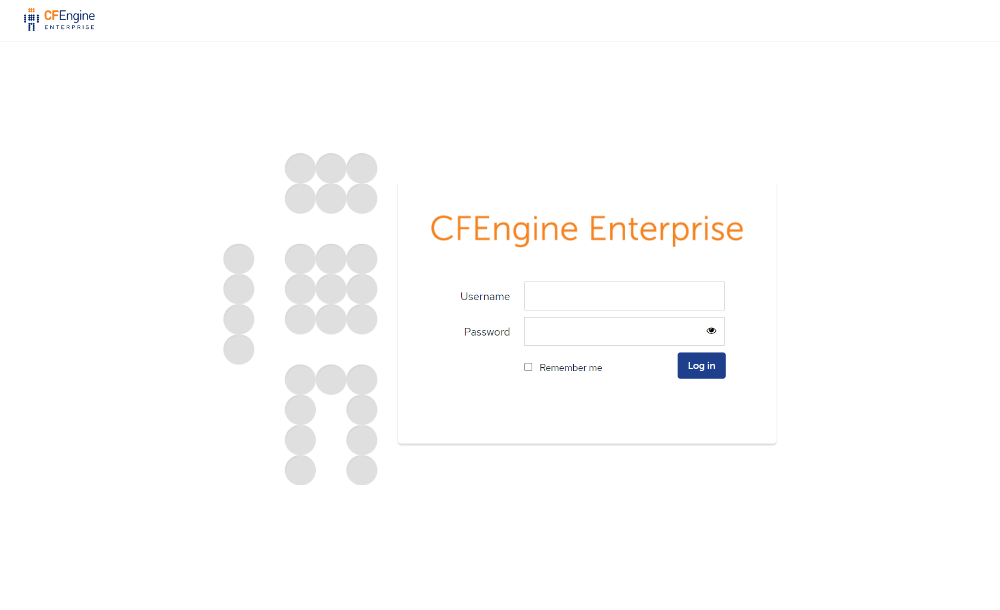
After changing the password to something more secure, you should be able to log in and see the dashboard.
Next steps
Now that you have a CFEngine Hub working and the tooling on your development machine, you can go to the next part and start adding modules:
Pre-installation checklist
Download packages
Download CFEngine packages and verify their signatures.
System requirements
Please see Installing Enterprise for production for hardware and configuration requirements, and for Supported platforms and versions operating system support.
Required knowledge
- Linux
- SSH
- bash
- command line text editing (e.g. vi/vim, Emacs)
See also: Quick-Start Guide to Using vi, Quick-Start Guide to Using PuTTY
Quick-Start guide to using vi
This guide is designed for the novice user of CFEngine tutorials-and will introduce the basic use of a powerful tool that is referenced in the CFEngine learning documentation: the vi visual editor.
What is a visual editor? It lets you see multiple lines of the document you are editing-rather than simply issuing commands in the shell prompt. This means you can insert a very large piece of text and navigate anywhere in that text, and make changes.
The vi editor was developed for unix-but can run from any shell prompt, like PuTTY on the Windows platform, and also the Mac. So whatever the user's platform may be, learning to use vi will be very useful in working through the CFEngine tutorials.
When working in the CFEngine tutorials, vi will be used to do things like open files, insert text, save files, and many other functions.
vi will also be used when the CFEngine user starts to actually use the CFEngine software-for things like writing and deploying promises, the core of the CFEngine technology.
Learning the basics of vi is quite simple. The best way is by walking through an example.
Step 1. Inside the shell prompt, simply type "vi". This will allow the user to insert text and create a new file.
Step 2. type "i" then press the "Enter" key. This takes the user to the insert mode, and allow typing in text or copying and pasting.
Step 3. Type some text-for example, the obligatory "Hello World" (which will be the subject of a later tutorial). Now press "Enter" to go to the next line and type "My name is Gary, and it's nice to meet you."
The output will look like this:
Hello World
My name is Gary, and it's nice to meet you
Step 4. Now exit the insert mode and go back to command mode by pressing the "esc" key.
Step 5. Save the file by typing ":w (filename)"
Step 6. exit vi by typing ":q"
You can also save and exit with one command, ":wq"
It is important to remember that there are two basic operation modes in vi: the command mode, with which the user opens, saves and exits from files, and the insert mode with which the user inserts text-either by typing it in, or by copying and pasting-and can then edit any part of the text in the file.
open file using vi filename
Quick-Start guide to using PuTTY
- Using PuTTY in simple steps
- Accessing AWS virtual machines via SSH on Windows using PuTTY and PuTTYgen
Using PuTTY in simple steps
This guide is intended for Windows users who are not accustomed to using SSH, or need some additional support for understanding how to work with SSH from their machine (e.g. challenges with key pairs).
It describes how to start using the free, open-source program PuTTY, to securely connect a client computer to a remote Linux/Unix server.
Many of the tutorials to follow will refer to using PuTTY, which is a popular SSH client for Windows workstations.
The important thing about PuTTY is that it is a secure way to connect a client to a server, using the SSH network protocol. It has a powerful and easy-to-use graphical user interface (GUI) and is used to run a remote session over a network.
What is SSH? It is short-form for "Secure Shell," which means it creates a secure channel over an insecure network-like the internet, for example.
How does SSH do this? By encrypting the communications between the client and the server, using public-key cryptography, which means that a key-pair is generated-one of them public, and the other private, or secret, known only to the user.
Since CFEngine is a client-server enterprise software system, it is essential to access the servers securely. This is true whether the CFEngine system is run on a cloud platform, like Amazon Web Services and many others-or on a private network.
That is where PuTTY comes into the picture, since it uses SSH protocol for connecting a client to a server.
The PuTTY software consists of two separate programs PuTTY and PuTTYgen: They can be downloaded at http://www.chiark.greenend.org.uk/~sgtatham/putty/download.html
PuTTYgen is used to generate the encryption key pair while PuTTY, a command-line interface, is used to securely access the CFEngine server, or hub, from a remote client machine, which is called a host in CFEngine terminology.
PuTTYgen is used only when setting up a new client machine on the CFEngine hub. The CFEngine hub will already have an encrypted key-pair that was created when setting up the hub. (See the tutorial, Installing CFEngine on RHEL Using AWS)
The following steps describe how to get the client machine, up and running using PuTTYgen and PuTTY. There are two distinct steps to this process:
Step 1. Use PuTTYgen to create an encrypted key-pair in the .ppk file format that PuTTY uses.
(It is important to note that the key-pair on the hub will probably be in a file format that is different from the PuTTYgen .ppk file format. For example on Amazon Web Services (AWS) and many other cloud computing services, the key-pair file format created when setting up the server (_hub_) will be in the .pem file format.)
Step 2. Configure the PuTTY application in order to securely access the CFEngine hub.
Step 1. consists of the following sequence: First, launch PuTTYgen by double-clicking on the puTTygen icon in the Windows programs menu tree; (It should be inside the PuTTY folder that was created when the PuTTY was downloaded and installed.)
Next, download the key-pair and save it on the local hard disk in the .ppk file format.

a. Click Load. The following Load private key window will pop up:
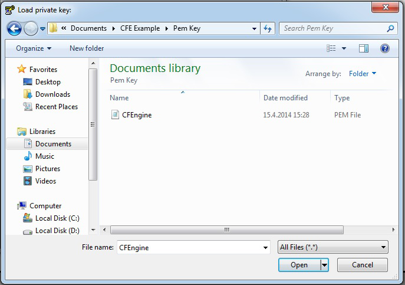
b. In the Load private key window select All Files (*.*) in the drop down menu next to the File name input box.
c. Navigate to the location on disk where the public-key file was downloaded in earlier steps, in this case a .pem file. Click Open. The following window will appear:
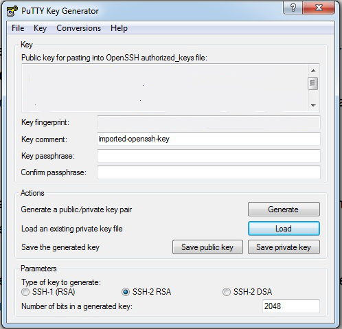
d. Enter a Passphrase and confirm the Passphrase. If no Passphrase is desired, leave those fields empty.
e. When the key has been loaded click the Save private key button.
f. If saving without a Passphrase a dialog box will pop up; click yes to save the key without a Passphrase
g. Now close PuTTYgen.
Accessing AWS virtual machines via SSH on Windows using PuTTY and PuTTYgen
Get PuTTY and PuTTYgen
- To get PuTTY and PuTTYgen, first go to
http://www.chiark.greenend.org.uk/~sgtatham/putty/download.html and either:
- Download and install using the PuTTY binaries installer
- Or, download PuTTY and PuTTYgen individually
Prepare private key using PuTTYgen
- After the binaries have been downloaded and/or installed either:
- Double click
puttygen.exefrom the download location, if downloaded directly. - Or, if the PuTTY installer was used above, one of either:
- Press the
Windowskey +Rkey and then typeputtygenin the field namedOpen. Then press theEnterkey or clickOK. - Alternatively, double click puttygen.exe under
C:\Program Files (x86)\PuTTY(when using Windows 64 bit) orC:\Program Files\PuTTY(when using Windows 32 bit).
- Double click
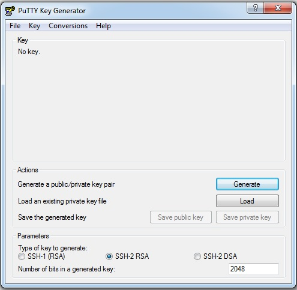
The Puttygen Interface. You will load the .pem file that you created in AWS.
- On the PuTTYgen interface click the load button.
- In the Load private key window select All Files (*.*) in the drop down menu next to the File name input box.
- Navigate to the location on disk where the .pem file was downloaded in earlier steps.
- When the key has been loaded click the Save private key button.
- When prompted with a warning about saving without a passphrase, click yes.
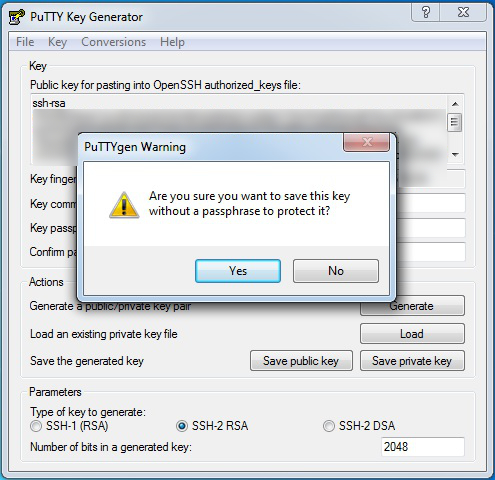
The Puttygen popup window. Click Yes, to proceed without a passphrase. You can also protect your private key with a passphrase that you enter into Key Passprhase and Confirm Key Passphrase.
- Finally, navigate to a good location on disk to save the key file, enter a name for the private key, ensure PuTTY Private Key Files (*.ppk) type is selected, and then click the Save button.
- You can now close the Puttygen application. You will call up the .ppk file when you configure the virtual machines using PuTTY.
Configure PuTTY
- Before configuring PuTTY, go back to your AWS Console, then navigate to INSTANCES > Instances.
- Make a note of the 2 different Public DNS entries for the virtual machines that were setup earlier (e.g. ec2xxxxxxxxxxxx.uswest1.compute.amazonaws.com, where the x's represent numbers).
- Launch PuTTY by either:
- Double clicking
putty.exefrom the download location, if downloaded directly. - Or, if the PuTTY installer was used above, one of either:
- Press the
Windowskey +Rkey and then typeputtyin the field namedOpen. Then press theEnterkey or clickOK. - Alternatively, double click
putty.exeunderC:\Program Files (x86)\PuTTY(when using Windows 64 bit) orC:\Program Files\PuTTY(when using Windows 32 bit). - On the PuTTY interface, select
Category > Sessionon the left side navigation tree:
- Double clicking
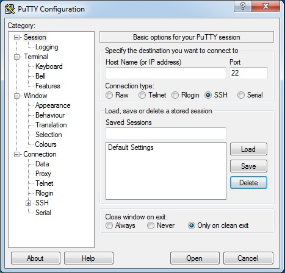
The Putty interface, with Session selected on the left-side navigation tree.
- Now, we will configure the Putty application, which we will use to set up the two AWS virtual machines.
- The first step is to create a Host Name for the first VM.
- The Host Name consists mainly of the public DNS entry that was created for one of the two virtual machines in AWS. But the DNS is preceded by a user name,
ec2-user, followed by the@symbol, which is then followed by the DNS entry.
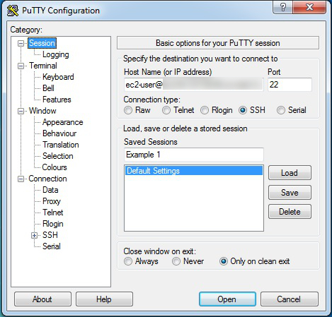
Setting up the PuTTY configuration with the Host Name, and a Saved Sessions Name.
- Port should be set to
22. - Connection type should be set to
SSH. Saved Sessionscan be any label.
Once we have entered our Host Name and our Saved Sessions name, we take the following steps:
* Select Connection > SSH > Auth on the left side navigation tree.
* Click the Browse button to select the Private key for authentication.
* In the Select private key file window, navigate to the .ppk private key file created earlier, and double-click on it to enter it into PuTTY. Your PuTTY screen should look like this:
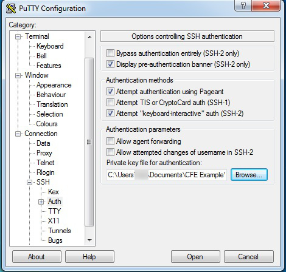
Note that Auth has been selected on left-side tree, in order to bring up this screen.
- Now we go back and select
Category > Sessionon the left side navigation tree and then press theSavebutton. - Repeat the steps for the second virtual machine, starting from setting the Host Name through pressing the Save button (as described above). Your PuTTY screen should show the two saved virtual machines, which are here named
Examples 1 and 2. - Note: It may be necessary to redo the steps from selecting
Connection > SSH > Auththrough selecting the .ppk private key file. In other words, when configuring the connection the private key file may not be persistently saved. - Wait a moment, and select
Yesif prompted. - This prompt will generally only be necessary when trying to login for the very first time.
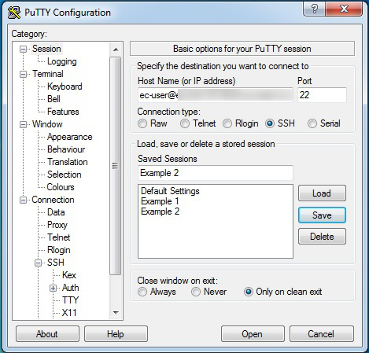
The PuTTY interface with the two virtual machines saved. We can now proceed to configure those virtual machines with CFEngine.
Login to virtual machines using PuTTY
- If one of the two virtual machines is configured and its details loaded in the PuTTY interface, first select the machine, then click the Open button. This will close the above PuTTY interface and open a command-line window, from which we will setup CFEngine on each of the two machines. One machine will act as the Server and the other as the client, and they will each be set up with different software.
- Once the first virtual machine is logged into, right click the top of PuTTY's application window (e.g. the part of the window decoration displaying the virtual machine name).
- In the contextual menu that then shows click New Session.
- Select the second virtual machine entry in the Saved Sessions list.
- Click Load and then Open.
- Both virtual machines should now be accessed in two different PuTTY command-line windows. Below is an example of what the command-line window will look like.

The PuTTY command-line window, which we will use to configure the virtual machines with CFEngine.
Verifying package signatures
On the Download CFEngine, you will find
sha256 checksums of all downloadable files which you can verify by using
sha256sum tool.
In addition to this, *.deb and *.rpm packages (with the exception of AIX rpms) are
cryptographically signed using gpg.
Validating signature of RPM
NOTE: AIX rpms currently are NOT signed because it's not supported on older versions of AIX.
- Import the public GPG key.
rpm --import https://cfengine-package-repos.s3.amazonaws.com/pub/gpg.key
- Validate the signature.
rpm -K ./cfengine-nova-hub-3.12.2-2.x86_64.rpm
./cfengine-nova-hub-3.12.2-2.x86_64.rpm: rsa sha1 (md5) pgp md5 OK
NOTE: If you don't import the public key first, you will get an error about the key missing:
rpm -K ./cfengine-nova-hub-3.12.2-2.x86_64.rpm
./cfengine-nova-hub-3.12.2-2.x86_64.rpm: RSA sha1 ((MD5) PGP) md5 NOT OK (MISSING KEYS: (MD5) PGP#a86e7afa)
Validating signature of DEB
- Import the public GPG key.
# wget https://cfengine-package-repos.s3.amazonaws.com/pub/gpg.key
# mkdir /usr/share/debsig/keyrings/7061B663A86E7AFA
# gpg --no-default-keyring --keyring /usr/share/debsig/keyrings/7061B663A86E7AFA/debsig.gpg --import gpg.key
- Create a policy.
# mkdir /etc/debsig/policies/7061B663A86E7AFA
# cat >/etc/debsig/policies/7061B663A86E7AFA/cfengine3.pol
<?xml version="1.0"?>
<!DOCTYPE Policy SYSTEM "http://www.debian.org/debsig/1.0/policy.dtd">
<Policy xmlns="http://www.debian.org/debsig/1.0/">
<Origin Name="cfengine3" id="7061B663A86E7AFA" Description="CFEngine 3"/>
<Selection>
<Required Type="origin" File="debsig.gpg" id="7061B663A86E7AFA"/>
</Selection>
<Verification MinOptional="0">
<Required Type="origin" File="debsig.gpg" id="7061B663A86E7AFA"/>
</Verification>
</Policy>
^D
- Validate the signature.
debsig-verify cfengine-nova-hub_3.12.2-2_amd64.deb
debsig: Verified package from 'CFEngine 3' (cfengine3)
Local virtual machine
This short tutorial shows you how to set up a Linux Virtual Machine locally, if you prefer this over creating an account and using an online cloud provider like Digital Ocean.
Note: If you are using Digital Ocean or another cloud platform, you don't need this tutorial.
Video
There is a video version of this tutorial available on YouTube:
Download and install virtualization software
Install Vagrant and VirtualBox from their respective websites:
VirtualBox is used for virtualization, and vagrant is a nice way of interacting with the VirtualBox software, through the vagrant Command Line Interface (CLI), and in a Vagrantfile.
SSH key
If you've never used SSH before, you need to generate a new SSH key:
ssh-keygen
You can use the defaults, just press enter instead of typing things. After running the commands or if you already have been using SSH, you should be able to find your public key:
ls ~/.ssh/
The output should look like this:
id_rsa id_rsa.pub known_hosts
id_rsa.pub is the public key, which we will copy into the virtual machine for easy access over SSH.
Note: id_rsa.pub is the default filename, if you are using a different filename for the public key, pay attention and replace it later in the Vagrantfile.
Create a project folder and Vagrantfile
We need a project folder where we will place the file(s) needed for both vagrant and later CFEngine:
mkdir -p ~/cfengine_project && cd ~/cfengine_project
Now, inside the folder, we can create and edit the Vagrantfile:
touch Vagrantfile && code Vagrantfile
(We are using code, VS Code, but you can use any editor you want).
Put this in your Vagrantfile:
# -*- mode: ruby -*-
# vi: set ft=ruby :
Vagrant.configure("2") do |config|
# Copy the SSH key to the VM(s):
config.vm.provision "shell" do |s|
ssh_pub_key = File.readlines("#{Dir.home}/.ssh/id_rsa.pub").first.strip
s.inline = <<-SHELL
echo #{ssh_pub_key} >> /home/vagrant/.ssh/authorized_keys
echo #{ssh_pub_key} >> /root/.ssh/authorized_keys
SHELL
end
# Ubuntu 20.04 VM, for CFEngine Enterprise Hub:
config.vm.define "hub", autostart: false do |hub|
hub.vm.box = "ubuntu/focal64"
hub.vm.hostname = "hub"
hub.vm.network "private_network", ip: "192.168.56.2"
hub.ssh.insert_key = true
hub.vm.provider "virtualbox" do |v|
v.memory = 2048
v.cpus = 4
end
end
end
The Vagrantfile above does some important things:
- Defines a Ubuntu 20.04 Virtual machine called
hub, with hostnamehub - Sets its IP address to be
192.168.56.2 - Sets how much memory and CPU cores we want the VM to have
- Copies the
id_rsa.pubpublic key into the host when it starts, so we can usessh
Note: The machine will be called hub in vagrant, cf-remote and in Mission Portal (based on hostname), but this is just because we were consistent when naming it in all 3 places.
These 3 names do not have to match, but it is easier to remember
Start the virtual machine
To start our VM, make sure you've saved the file above, with the filename Vagrantfile and run this command in the same folder:
vagrant up hub
At this point, the VM should work like any Linux VM, similar to if you spawned it in the cloud, and we won't be using more features of vagrant or VirtualBox.
Note: Later, when you are done working with the Virtual Machine and want to get rid of it, run the following command:
vagrant destroy hub
Back to CFEngine installation
Now that you have a Linux VM ready, go back to the main tutorial to install CFEngine:
General installation
There are several steps to bring up a CFEngine installation within an organization:
- Prepare all appropriate machines for installation.
- Configure your network and security.
- Download the CFEngine software.
- Install CFEngine on the Policy Server(s).
- Bootstrap the policy server to itself.
- Initiate post-install configuration on the Policy Server.
- Install CFEngine on the Host machine(s).
- Bootstrap the Host(s) to a Policy Server.
Before installation
Check the Pre-installation checklist and Supported platforms and versions for requirements and other information that is useful for the installation procedure.
Install packages
CFEngine Enterprise is provided in two packages; one is for the Policy Server (hub) and the other is for each Host (client).
Note: See Installing Community for the community version of CFEngine)
Log in as root and then follow these steps to install CFEngine Enterprise:
On the designated Policy Server, install the
cfengine-nova-hubpackage:code[RedHat/CentOS/SUSE] # yum -y install /path/to/<server hub package>.rpm [Debian/Ubuntu] # apt -y install /path/to/<server hub package>.debOn each Host, install the
cfengine-novapackage:code[RedHat/CentOS/SUSE] # yum -y install /path/to/<agent package>.rpm [Debian/Ubuntu] # apt -y install /path/to/<agent package>.deb
Note: Install actions logged to /var/logs/cfengine-install.log.
Bootstrap
Bootstrapping a client means to configure it initially. With CFEngine, the default bootstrap:
- records the server's address (accessible as
sys.policy_hub) and public key, and gives the server the client's key to establish trust (see Bootstrapping) - copies all the contents of
/var/cfengine/masterfileson the policy server (AKAsys.masterdir) to/var/cfengine/inputs(AKAsys.inputdir). Seeupdate.cffor details.
Run the bootstrap command, first on the policy server:
- Find the IP address of your Policy Server:
ifconfig
- Run the bootstrap command:
sudo /var/cfengine/bin/cf-agent --bootstrap <IP address of policy server>
The bootstrap command must then be run on any client attaching itself to this server, using the ip address of the policy server (i.e. exactly the same as the command run on the policy server itself).
Post-installation configuration
CFEngine itself is configured through policy as well (see Components and
Masterfiles Policy Framework for details). The following basic changes to the default policy will configure
cf-serverd and cf-execd for your environment.
Configure agent email settings
By default an email a summary of any cf-agent run initiated by cf-execd. You
may want to adjust the mailto or mailfrom. If you have a centralized reporting
system like CFEngine Enterprise you may wish to disable agent emails all
together.
Configure mailto and mailfrom
The preferred way of setting def.mailfrom is from the
augments file.
{
"vars": {
"mailfrom": "sender@your.domain.here",
"mailto": "recipient@your.domain.here"
}
}
Alternatively you can alter the setting in def.cf.
Note: On some systems these modifications should hopefully work without needing to make any additional changes elsewhere. However, any emails sent from the system might also end up flagged as spam and sent directly to a user's junk mailbox.
Note: It's best practice to restart daemons after adjusting it's settings to ensure they have taken effect.
Disable agent emails
The preferred way to disable the agent from sending emails is to define
cfengine_internal_disable_agent_email from the augments file.
{
"classes": {
"cfengine_internal_disable_agent_email": [ "any" ]
}
}
Alternatively you can define the class from def.cf.
Note: It's best practice to restart daemons after adjusting it's settings to ensure they have taken effect.
Server IP address and hostname
Edit /etc/hosts and add an entry for the IP address and hostname of the server.
CFEngine Enterprise post-installation setup
See: [What steps should I take after installing CFEngine Enterprise?][FAQ#What steps should I take after installing CFEngine Enterprise]
More detailed installation guides
Although most install procedures follow the same general workflow, there are several ways of installing CFEngine depending on your environment and which version of CFEngine you are using.
- Installing Enterprise for production
- Install and test the latest version using our native version, for free!
- Installing CFEngine on virtual machine instances using Amazon Web Services' (AWS) EC2 service
- This is especially useful for people running Windows on their workstation or laptop.
- Install and test the latest version using our pre-packaged Vagrant environment
- Installing CFEngine Community Edition
Next steps
- Learn about Writing and serving policy
Using Amazon Web Services
This guide describes how to install CFEngine on two Red Hat® Enterprise Linux® (RHEL) virtual machines using Amazon Web Services™ (AWS) and SSH. At the time of writing, under certain conditions, setting up an AWS account and using micro-instances is free.
One of the two machines will be a policy server, while the other will be a host.
Although these instructions walk through the steps needed to install CFEngine Enterprise on two machines, up to 25 machines can be set up using the same procedure and scripts.
This tutorial will cover the following steps:
- Initial Configuration of the AWS Virtual Machines.
- Configuring the Security Group.
- Configuring SSH Access to the Virtual Machines Using PuTTY (for Windows machines).
- Configuring the Firewall on the Policy Server.
- Installing CFEngine on both the Policy Server and Host Virtual Machines.
Initial configuration of the virtual machines in AWS
Configure 2 RHEL virtual machine instances in AWS
- Login to AWS.
- Under
Create Instanceclick onLaunch Instance. - On the line
Red Hat Enterprise Linux 64 Bit Free tier eligiblepress theSelectbutton. - On the
Choose Instance Typescreen ensure theMicro Instancestab on the left is selected.
Configure instance details
- Press
Next: Configure instance details. - On the
Configure instance detailsscreen change the number of instances to 2. - Leave
Networkas the default. Subnetcan beNo preference.- Ensure
Public IPis checked. - Leave all else at their default values.
Review and launch
- Click
Review and launch. - Make a note of
Security groupname on theReview Instance Launchscreen. - Click
Launch. - Select
Create a new keypair in the first drop down menu. - Enter anything as the
Key pair name. - Click the
Download Key Pairbutton and save the .pem file to your local computer. - After the .pem file is saved click the
Launch Instancebutton. - On the
Launch Statusscreen click theView Instancesbutton.
Configure the security group
- On the left hand side of the AWS console click
NETWORK & SECURITY > Security Groups - Remembering the
Security groupname from earlier, click on the appropriate line item in the list. - Below the list of security group names will display details for the current security group.
- Click the
Inboundtab. - Click "Edit" button. A popup window will appear with "SSH" rule already present.
- Click the
+Add Rulebutton. SelectHTTPfrom the drop-down list. Click "Add Rule" button again. - Select
Custom TCP ruleand enter5308in thePort rangetext entry. Select "Custom IP" from the drop-down menu in the "Source" column. - Copy the "Group ID" from the line containing your "Group Name" and copy the "Group ID" into the text entry in the last column. Click "Save."
- Click the "Edit" button again. On the "Custom TCP" Rule, select "Anywhere" from the "Source" drop-down list. Click "Save."
Accessing the virtual machines using SSH
See: Quick-Start Guide to Using PuTTY
Install and configure the firewall
Install the firewall
- Ensure you are logged into both virtual machines.
- In both enter
sudo yum install system-config-firewallto install. - Hit 'y' if prompted.
Configure the firewall on the policy server (AKA hub)
The following steps are only necessary for one of the two virtual machines, the one that is designated as the policy server; these steps can be omitted on the second (client machine). Note that CFEngine refers to a client machine by the name Host:
- When system-config-firewall is installed, enter
sudo system-config-firewall - In the
Firewall Configurationscreen use theTabkey to go to Customize. - Hit the
Enterkey. Below is theFirewall Configurationwindow that comes up:
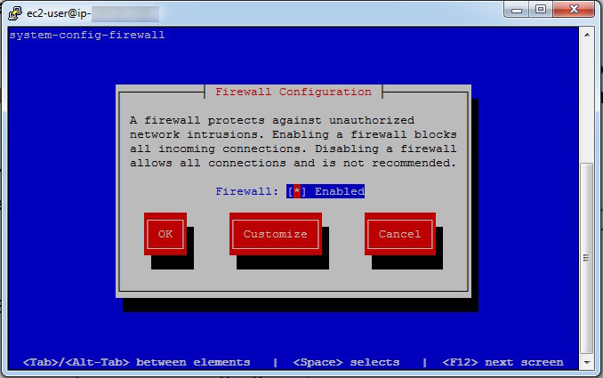
Open port 80 (HTTPD)
- On the
Trusted Servicesscreen, scroll down toWWW (HTTP), AKA port 80. - Hit the
Space Barto toggle theWWWentry (i.e. ensure it is on, showing an asterisk beside the name).
Open port 5308 (CFEngine)
- Hit the
Tabkey again untilForwardis highlighted, then hitEnter. - Hit the
Tabkey untilAddis highlighted, then hitEnter. - Enter
5308in thePortsection. - Hit the
Tabkey and entertcpin theProtocolsection. - Hit the
Tabkey until OK is highlighted, and hitEnter.
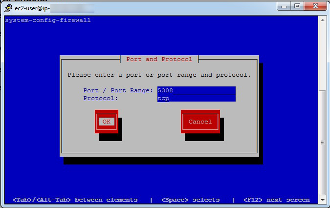
The Port and Protocol are entered in the blue boxes, with entries of 5308 and tcp respectively.
Then the Tab key is used to highlight the OK button, and the user presses Enter.
Wrapping up firewall configuration
- Hit the
Tabkey untilCloseis highlighted, and hitEnter. - Hit the
Tabkey or arrow keys untilOKis highlighted, and hitEnter.
Disabling firewall on a host (Warning: Only do this if absolutely necessary)
For the second virtual machine, which is the client machine (also called host), you may need to do the following if you see an error when bootstrapping this virtual machine in later steps:
* In the Firewall Configuration screen use the Tab key to go to Firewall.
* Turn off the firewall by toggling the entry with the Space bar.
Note: Turning off the firewall in a production environment is considered unsafe.
CFEngine installation overview
We ready now ready to install the CFEngine software on both the server and client virtual machines. These also referred to as the "hub" and "host" machines, respectively. During the course of the instructions outlined in this guide, you will perform the following tasks:
- Install CFEngine Enterprise onto a Policy Server and onto Hosts. A Policy Server (hub) is a CFEngine instance that contains promises (business policy) that get deployed to Hosts. Hosts are clients that retrieve and execute promises.
- Bootstrap the policy server to itself and then bootstrap each of the Hosts to the Policy Server. Bootstrapping establishes a trust relationship between the Policy Server and all Hosts. Thus, business policy that you create in the Policy Server can be deployed to Hosts throughout your company. Bootstrapping completes the installation process.
- Log in to the Mission Portal. The Mission Portal is a graphical user interface that allows you to verify the actual state of all your Hosts, thus ensuring that your promises are being executed.
- Try out the Tutorials. Links to three tutorials give you a head start on learning CFEngine.
Step 1. Download and install Enterprise on a policy server
Run the following script on your designated Policy Server (hub), the virtual machine with the configured firewall from earlier steps:
wget https://s3.amazonaws.com/cfengine.packages/quick-install-cfengine-enterprise.sh && sudo bash ./quick-install-cfengine-enterprise.sh hub
This script installs the latest CFEngine Enterprise Policy Server on your server machine.
Step 2. Bootstrap the policy server
- The Policy Server must be bootstrapped to itself. Find the IP address of your Policy Server:
$ ifconfig. Run the bootstrap command:
sudo /var/cfengine/bin/cf-agent --bootstrap <IP address of policy server>Example:
$ sudo /var/cfengine/bin/cf-agent --bootstrap 172.31.3.25

Upon successful completion, a confirmation message appears: "Bootstrap to '172.31.3.25' completed successfully!"
Type the following to check which version of CFEngine your are running:
/var/cfengine/bin/cf-promises --versionThe Policy Server is now installed.
Step 3. Install Enterprise on host (client)
- Ensure you are logged into the host machine setup earlier.
- Install CFEngine client version using the following:
wget https://s3.amazonaws.com/cfengine.packages/quick-install-cfengine-enterprise.sh && sudo bash ./quick-install-cfengine-enterprise.sh agent
Note: The installation will work on 64-bit and 32-bit client machines (the host requires a 64-bit machine).

The client software (host), has been installed on the second virtual machine.
Note: You can install CFEngine Enterprise on up to 25 hosts using the script above.
Step 4. Bootstrap the host to the policy server
- All hosts must be bootstrapped to the Policy Server in order to establish a connection between the
Hostand thePolicy Server. Run the same commands that you ran in Step 2,
$ sudo /var/cfengine/bin/cfagent bootstrap <IP address of policy server>.Example:
$ sudo /var/cfengine/bin/cfagent bootstrap 172.31.3.25The installation process is complete and CFEngine Enterprise is up and running on your system.
Step 5. Log in to the Mission Portal
- The Mission Portal is immediately accessible. Connect to the Policy Server through your web browser at: http://
(Note: The External IP address is available in the AWS console). - The default username for the Mission Portal is
admin, and the password is alsoadmin. - The Mission Portal runs TCP port 80 by default. Configure mission portal to use HTTPS instead of HTTP.
- During the initial setup, the Host(s) might take a few minutes to show up in the Mission Portal. Refresh the web page and login again if necessary.
What next?
Tutorials
Distributing files from a central location.
Whereas the first tutorial in this list teaches you how to deploy business policy through the Mission Portal, this advanced, command-line tutorial shows you how to distribute policy files from the Policy Server to all pertinent Hosts.
Recommended reading
Installing Enterprise 25 Free
These instructions describe how to install the latest version of CFEngine Enterprise 25 Free. This is the full version of CFEngine Enterprise, but the number of Hosts (clients) is limited to 25.
Note the following requirements:
- To install this version of CFEngine Enterprise, your machine must be running a recent version of Linux. This installation script has been tested on RHEL 5 and 6, SLES 11, CentOS 5 and 6, and Debian 6 and 7.
- You need a minimum of 2 GB of available memory and a modern 64 bit processor.
- Plan for approximately 100MB of disk space per host. You should provide an extra 2G to 4G of disk space if you plan to bootstrap more hosts later.
- You need a least two VMs/servers, one for the Policy Server and one for a Host (client). They must be on the same network.
- The Policy Server needs to run on a dedicated OS with a vanilla installation (i.e. it only has repositories and packages officially supported by the OS vendor)
Installation Overview
During the course of the instructions outlined in this guide, you will perform the following tasks:
- Install CFEngine Enterprise onto a Policy Server and onto Hosts. A Policy Server (hub) is a CFEngine instance that contains promises (business policy) that get deployed to Hosts. Hosts are clients that retrieve and execute promises.
- Bootstrap the policy server to itself and then bootstrap each of the Hosts to the Policy Server. Bootstrapping establishes a trust relationship between the Policy Server and all Hosts. Thus, business policy that you create in the Policy Server can be deployed to Hosts throughout your company. Bootstrapping completes the installation process.
- Log in to the Mission Portal. The Mission Portal is a graphical user interface that allows you to verify the the actual state of all your Hosts, thus ensuring that your promises are being executed.
- Try out the Tutorials. Links to three tutorials give you a head start on learning CFEngine.
1. Download and install Enterprise on a policy server
Please Note: Internet access is required from the host if you wish to use the quick install script.
Run the following script on your designated Policy Server (hub) 64-bit machine (32-bit is not supported on the Policy Server):
wget https://s3.amazonaws.com/cfengine.packages/quick-install-cfengine-enterprise.sh && sudo bash ./quick-install-cfengine-enterprise.sh hub
This script installs the latest CFEngine Enterprise Policy Server on your machine.
2. Bootstrap the policy server
The Policy Server must be bootstrapped to itself. Find the IP address of your Policy Server (type $ ifconfig).
Run the bootstrap command:
sudo /var/cfengine/bin/cf-agent --bootstrap <IP address of policy server>
Example: $ sudo /var/cfengine/bin/cf-agent --bootstrap 192.168.1.12
Upon successful completion, a confirmation message appears: "Bootstrap to '192.168.1.12' completed successfully!"
Type the following to check which version of CFEngine your are running:
/var/cfengine/bin/cf-promises --version
The Policy Server is installed.
3. Install Enterprise on Hosts
Install Enterprise on your designated Host(s) by running the script below. Per the Free 25 agreement, you can install Enterprise on 25 Hosts. Note that the Hosts must be on the same network as the Policy Server that you just installed in Step 2.
wget https://s3.amazonaws.com/cfengine.packages/quick-install-cfengine-enterprise.sh && sudo bash ./quick-install-cfengine-enterprise.sh agent
Note that this installation works on 64- and 32-bit machines.
4. Bootstrap the host to the policy server
All Hosts must be bootstrapped to the Policy Server in order to establish a connection between the Host and the Policy Server. Run the same commands that you ran in Step 3.
sudo /var/cfengine/bin/cf-agent --bootstrap <IP address of policy server>
Example: $ sudo /var/cfengine/bin/cf-agent --bootstrap 192.168.1.12
The installation process is complete and CFEngine Enterprise is up and running on your system.
5. Log in to the Mission Portal
The Mission Portal is immediately accessible. Connect to the Policy Server through your web browser at:
http://<IP address of your Policy Server>
username: admin password: admin
The Mission Portal runs TCP port 80 by default. (Click here to configure the Mission Portal to use HTTPS instead of HTTP.) During the initial setup, the Host(s) might take a few minutes to show up in the Mission Portal. Simply refresh the web page and login again if necessary.
Note: If you are running Enterprise with Vagrant, you must add the
correct port: http://localhost:
Tutorials
Distributing files from a central location.
Whereas the first tutorial in this list teaches you how to deploy business policy through the Mission Portal, this advanced, command-line tutorial shows you how to distribute policy files from the Policy Server to all pertinent Hosts.
Recommended reading
Using Vagrant
The CFEngine Enterprise Vagrant Environment provides an easy way to test and explore CFEngine Enterprise. This guide describes how to set up a client-server model with CFEngine and, through policy, manage both machines. Vagrant will create one VirtualBox VM to be the Policy Server (server), and another machine that will be the Host Agent (client), or host that can be managed by CFEngine. Both running 64-bit Debian and communicate on a host-only network. Apart from a one-time download of Vagrant and VirtualBox, this setup requires just one command and takes between 5 and 15 minutes to complete (determined by your Internet connection and disk speed). Upon completion, you are ready to start working with CFEngine.
Requirements
- 2G disk space
- 3G memory
- CPU with VT extensions capable of running 64bit guests
Note: VirtualBox requires that your computer support hardware virtualization in order to make use of the virtual machines mentioned above. This is sometimes turned on or off in BIOS settings, but not all processors and motherboards necessarily support hardware virtualization.
If your system lacks this support you will need to choose another computer to take advantage of the 64-bit virtual machines or install CFEngine using a different approach.
Overview
- Install Vagrant
- Install Virtualbox
- Start the CFEngine Enterprise Vagrant Environment
- Log in to the Mission Portal
- Stop CFEngine Enterprise
- Uninstall
Install Vagrant
This tutorial uses Vagrant to configure your VMs. It is available for Linux, Windows and MacOS and can be downloaded from vagrantup.com. After downloading Vagrant, install it on your computer. You may want to reference the Windows Mac or Linux vagrant install guides.
Install Virtualbox
This tutorial uses VirtualBox to create virtual machines on your computer, to which Vagrant deploys CFEngine. VirtualBox can be downloaded from virtualbox.org. After downloading VirtualBox, install it on your computer.
Note: To avoid problems, disable other virtualization environments you are running.
Start the CFEngine Enterprise 3.26 Vagrant environment
Step 1. Download our ready-made Vagrant project tar-file.
Step 2. Save and unpack the file anywhere on your drive; this creates a Vagrant Project directory.
Step 3. Open a terminal and navigate to the Vagrant Project directory (e.g.
/home/user/CFEngine_Enterprise_vagrant_quickstart-3.26.0-1, or C:\CFEngine_Enterprise_vagrant_quickstart-3.26.0-1) and enter the following command:
vagrant up
Vagrant performs the following processes:
- Downloads the basebox for both the hub and the client (if it has not already been cached by vagrant.
- Provisions, installs and bootstraps the hub
- Provisions, installs and bootstraps clients
The basebox is ~500MB.
Note: If you want to use more hosts in this environment, you can edit the Vagrantfile text file in the directory that you have just created. Change the line that says "hosts = 1" to the number of hosts that you want in the setup. The maximum supported in this evaluation version of CFEngine is 25.
Log in to the Mission Portal
At the end of the setup process, you can use your browser to log in to the Mission Portal:
http://localhost:9002
username: admin
password: admin
Note: It may take up to 15 minutes before the hosts register in Mission Portal.
That's all there is to it, the install is complete! Move on and explore the environment.
Exploring the environment
Accessing VMs
Accessing via SSH
The standard vagrant ssh key is configured. To ssh to a host run vagrant ssh
myhost where myhost is the name of a running vm as seen in the vagrant
status output. Both the 'root' and 'vagrant' users passwords are set to
'vagrant'.
Example:
vagrant ssh hub
Last login: Fri Jun 13 18:58:10 2014 from 10.0.2.2
Accessing via GUI
If you launch the virtualbox GUI you should find the vagrant vms named
CFEngine Enterprise 3.26.0-1 hub, and CFEngine Enterprise 3.26.0-1 agent host001. Additionally, you can uncomment the v.gui=true
option in the Vagrantfile to have the console gui start with the vms.
Note: There are two v.gui settings to uncomment; one for the hub, and one
for the clients.
Check the status of the vms
Running vagrant status from the vagrant project directroy will produce
output like this.
vagrant status
Current machine states:
hub not created (virtualbox)
host001 not created (virtualbox)
This environment represents multiple VMs. The VMs are all listed
above with their current state. For more information about a specific
VM, run `vagrant status NAME`.
Start or resume the environment
To start or resume a halted environment simply run vagrant up from within the
vagrant project directory.
vagrant up
Stop the environment (halt/suspend/destroy)
To shut down the vms run vagrant halt. This will preserve the vms and any
changes made inside.
vagrant suspend
==> hub: Saving VM state and suspending execution...
==> host001: Saving VM state and suspending execution...
To suspend the vms run vagrant suspend. This will freeze the state of each vm
and allows for latter resuming of the environment.
vagrant halt
==> host001: Attempting graceful shutdown of VM...
==> hub: Attempting graceful shutdown of VM...
At any time you can run vagrant destroy to remove the provisioned vms. This will
delete the vms and any modifications made to the environment will be lost.
vagrant destroy
host001: Are you sure you want to destroy the 'host001' VM? [y/N] y
==> host001: Forcing shutdown of VM...
==> host001: Destroying VM and associated drives...
==> host001: Running cleanup tasks for 'shell' provisioner...
==> host001: Running cleanup tasks for 'shell' provisioner...
==> host001: Running cleanup tasks for 'shell' provisioner...
hub: Are you sure you want to destroy the 'hub' VM? [y/N] y
==> hub: Forcing shutdown of VM...
==> hub: Destroying VM and associated drives...
==> hub: Running cleanup tasks for 'shell' provisioner...
==> hub: Running cleanup tasks for 'shell' provisioner...
==> hub: Running cleanup tasks for 'shell' provisioner...
Uninstall Vagrant environment
When you have completed your evaluation are ready to use CFEngine on production servers, remove the VMs that you created above by following these simple instructions:
To remove the VMs entirely, type: vagrant destroy
If you are completely done and do not anticipate using them anymore, you can
also remove the base box that was
downloaded. You can see it by typing vagrant box list. To delete the basebox
run vagrant box remove <basebox> virtualbox.
Note: Running vagrant up from the vagrant project directory again will
re-download this basebox.
Vagrant and VirtualBox are useful general purpose programs, so you might want to keep them around. If not, follow the standard procedures for your OS to remove these applications.
Next steps
See also
Installing Enterprise for production
These instructions describe how to install the latest version of CFEngine Enterprise in a production environment using pre-compiled rpm and deb packages for Ubuntu, Debian, Redhat, CentOS, and SUSE.
General requirements
CFEngine recommends the following:
Host Memory
During normal operation the CFEngine processes consume about 30 MB of resident memory (RSS) on hosts with the agent only (not acting as Policy Server).
However there might be spikes due to e.g. commands executed from the CFEngine policy so it is generally recommended to have at least 256 MB available memory in order to run the CFEngine agent software.
Host disk
So that the agent is not affected by full disks it is recommended that
/var/cfengine be on its own partition.
On Unix-like systems, a 500 MB partition for /var/cfengine should give you
some breathing room, typical user reported sizes are in the 100-250 MB range. On
Windows systems, CFEngine consumes more space because Windows lacks support for
sparse files (which are used opportunistically by lmdb). 5 G of space should
provide some breathing room, typical user reported sizes for C:\Program
Files\Cfengine are around 1 GB. As always things vary in different environments
it's a good idea to measure consumption in your infrastructure and customize
accordingly.
The agent builds local differential reports for promise outcomes. The
longer the period between collections from the enterprise hub the more
resources are required to calculate these differentials. You can
control the maximum disk space used by diff reports (contexts,
variables, software installed, software patches, lastseen hosts and
promise executions) by adjusting def.max_client_history_size.
Network
Verify that the machine's network connection is working and that port 5308 (used by CFEngine) is open for both incoming and outgoing connections.
If a firewall is active on your operating system, adapt it to it to allow for communication on port 5308 or disable it.
CFEngine bundles all critical dependencies into the package; therefore, additional software is not required.
Requirements for VIOS
CFEngine Enterprise has Virtual I/O Server (VIOS) Recognized status from IBM. This means that CFEngine Enterprise has been technically verified by IBM to be installed in and manage VIOS environments.
During testing, CFEngine Enterprise was seen to use up to 2% of the
VIOS CPU during cf-agent runs with the default CFEngine policy. The
resource utilization may vary depending on the policy CFEngine is
running. The VIOS should be configured with Shared Processors in
Uncapped mode.
Policy server requirements
Please note that the resource requirements below are meant as minimum guidelines and have been obtained with synthetic testing, and it is always better to leave some headroom if intermittent bottlenecks should occur. The key drivers for the vertical scalability of the Policy Servers are 1) the number of agents bootstrapped and 2) the size and complexity of the CFEngine policy.
cfapache and cfpostgres users
The CFEngine Server requires two users: cfapache and cfpostgres. If these users do not exist during installation of the server package, they will be created, so if there are constraints on user creation, please ensure that these users exists prior to installation.
These users are not required nor created by the agent package.
Dedicated OS
The CFEngine Server is only supported when installed on a dedicated, vanilla OS (i.e. it only has repositories and packages officially supported by the OS vendor). This is because the CFEngine Server uses services, e.g. apache, that are configured for CFEngine and may conflict with other custom application configurations.
One option, especially for smaller installations, is to run the CFEngine Server in a VM. But please consider the performance requirements when doing this.
CPU
A modern 64-bit processor with 12 or more cores for handling up to 5000 bootstrapped agents. This number is also linear with respect to the number of bootstrapped agents (so 6 cores would suffice for 2500 agents).
Memory
Minimum 3GB memory (can run with less for small testing/lab environments), but not lower than 8MB per bootstrapped agent. This means that, for a server with 5000 hosts, you should have at least 40GB of memory.
Disk sizing and partitioning
So that the agent is not affected by full disks it is recommended that
/var/cfengine be on it's own partition.
It is recommended that $(sys.workdir)/state/pg is mounted on a
separate disk. This will give PostgreSQL, which can be very disk I/O
intensive, dedicated resources.
Plan for approximately 100MB of disk space per bootstrapped agent. This means that, for a server with 5000 hosts, you should have at least 500 GB available on the database partition.
xfs is strongly recommended as the file system type for the file
system mounted on $(sys.workdir)/state/pg. ext4 can be used as an
alternative, but ext3 should be avoided.
Disk speed
For 5000 bootstrapped agents, the disk that serves PostgreSQL
($(sys.workdir)/state/pg) should be able to perform at least 1000
IOPS (in 16KiB block size) and 10 MB/s. The disk mounted on
$(sys.workdir) should be able to perform at least 500 IOPS and 0.5
MB/s. SSD is recommended for the disk that serves PostgreSQL
($(sys.workdir)/state/pg).
If you do not have separate partitions for $(sys.workdir) and
$(sys.workdir)/state/pg, the speed required by the disk serving
$(sys.workdir) adds up (for 5000 bootstrapped agents it would be
1500 IOPS and 10.5 MB/s).
Note Your storage IOPS specification may be given in 4KiB block size, in which case you would need to divide it by 4 to get the corresponding 16KiB theoretical maximum.
Network
For serving policy and collecting reports for up to 5000 bootstrapped agents, plan for at least 30 MB/s (240 MBit) speed on the interface that connects the Policy Server with the agents.
cf-serverd maxconnections
The maximum number of connections is the maximum number of sessions that
cf-serverd will support. The general rule of thumb is that it should be set to
two times the number of clients bootstrapped to the hub. So if you have 100
remote agents bootstrapped to your policy server, 200 would be a good value body
server control maxconnections.
Open file descriptors
Open file descriptors should be set at least two times body server control
maxconnections. Adjust soft and hard nofile in /etc/limits.conf or
appropriate file in /etc/limits.d/ accordingly for your platform.
For example, if you have 1000 remote agents, body server control maxconnections should be set to 2000, and open file descriptors should be set to at least 4000.
/etc/limits.d/90-nproc.conf
soft nofile 4000
hard nofile 4000
Not sure what your open file limits for cf-serverd are? Inspect the current
limits with this command:
cat /proc/$(pgrep cf-serverd)/limits
Download packages
Install packages
CFEngine Enterprise is provided in two packages; one is for the Policy Server (hub) and the other is for each Host (client).
Log in as root and then follow these steps to install CFEngine Enterprise:
On the designated Policy Server, install the
cfengine-nova-hubpackage:code[RedHat/CentOS/SUSE] # yum -y install /path/to/<hub package>.rpm [Debian/Ubuntu] # apt -y install /path/to/<hub package>.debOn each Host, install the
cfengine-novapackage:code[RedHat/CentOS/SUSE] # yum -y install /path/to/<agent package>.rpm [Debian/Ubuntu] # apt -y install /path/to/<agent package>.deb [Solaris] # pkgadd -d <agent package>.pkg all [AIX] # installp -a -d <agent package>.bff cfengine.cfengine-nova [HP-UX] # swinstall -s <full path to agent package>.depot cfengine-nova
Note: Install actions logged to /var/logs/cfengine-install.log.
Bootstrap
Run the bootstrap command, first on the policy server and then on each host:
/var/cfengine/bin/cf-agent --bootstrap <IP address of the Policy Server>
After bootstrapping the hub run the policy to complete the hub configuration.
/var/cfengine/bin/cf-agent -Kf update.cf; /var/cfengine/bin/cf-agent -K
Licensed installations
If you are evaluating CFEngine Enterprise or otherwise using it in an environment with less than 25 agents connecting to a Policy Server, you do not need a license and there is no expiry.
If you are a customer, please send the Policy Server's public key to CFEngine support to obtain a license.
It's best to pack the public key into an archive so that it does not get corrupt in transit.
tar --create --gzip --directory /var/cfengine --file $(hostname)-ppkeys.tar.gz ppkeys/localhost.pub
CFEngine will send you a license.dat file. Install the obtained
license with cf-key.
cf-key --install-license ./license.dat
Next steps
When bootstrapping is complete, CFEngine is up and running on your system.
The Mission Portal is immediately accessible. Connect to the Policy Server
through your web browser at http://<IP address of your Policy Server>.
Learn more about CFEngine by using the following resources:
Installing Enterprise on CoreOS
These instructions describe how to install the latest version of CFEngine Enterprise on CoreOS. The CoreOS package uses a file-system image in order to contain modifications to the root file-system.
Download packages
Download the file-system image package for CoreOS from the Enterprise Downloads Page.
Install package
On the CoreOS Host, extract the
fs-img-pkg.tar.gzarchive:commandtar xvf cfengine-nova-3.26.0-1.x86_64.fs-img.pkg.tar.gzOn the CoreOS Host, run the install script:
commandsudo ./cfengine-nova-3.26.0-1.x86_64.fs-img.pkg/install.sh
Note: Install actions logged to /var/log/CFEngine-Install.log.
Bootstrap
Run the bootstrap command:
sudo /var/cfengine/bin/cf-agent --bootstrap <IP address of the Policy Server>
Next steps
When bootstrapping is complete, CFEngine is up and running on your system. You can begin to manage the host through policy and report on its state from Mission Portal.
Installing from binary tarball
Not all systems come with a package manager. For these systems you can install CFEngine by means of a generic binary tarball.
First download the binary onto the host.
Next unpack the archive. For the 64 bit tarball use:
tar --gunzip --extract --directory / --file ./cfengine-nova-3.26.0-1.x86_64.pkg.tar.gz
Otherwise, for 32 bit tarball, use:
tar --gunzip --extract --directory / --file ./cfengine-nova-3.26.0-1.i386.pkg.tar.gz
Generate a keypair for the client:
/var/cfengine/bin/cf-key
Then install the systemd units:
for each in $(ls /var/cfengine/share/usr/lib/systemd/system); do
cp /var/cfengine/share/usr/lib/systemd/system/${each} /etc/systemd/system/${each}
chmod 664 /etc/systemd/system/${each}
done
systemctl daemon-reload
Next enable the necessary service units:
systemctl enable cf-execd
systemctl enable cf-monitord
systemctl enable cf-serverd
systemctl enable cfengine3
Finally, bootstrap the agent, and start the CFEngine services:
export POLICY_SERVER="myhub";
# Bootstrap to hub
/var/cfengine/bin/cf-agent --bootstrap ${POLICY_SERVER}
# Start the cfengine3 service.
systemctl start cfengine3
Installing Community
These instructions describe how to download and install the latest version of CFEngine Community using pre-compiled rpm and deb packages for Ubuntu, Debian, Redhat, CentOS, and SUSE.
It also provides instructions for the following:
- Install CFEngine on a policy server (hub) and on a Host (client). A Policy Server (hub) is a CFEngine instance that contains promises (business policy) that get deployed to Hosts. Hosts are clients that retrieve and execute promises.
- Bootstrap the policy server to itself and then bootstrap the Host(s) to the Policy Server. Bootstrapping establishes a trust relationship between the Policy Server and all Hosts. Thus, business policy that you create in the Policy Server can be deployed to Hosts throughout your company. Bootstrapping completes the installation process.
Quick setup with cf-remote
cf-remote can be used to easily download, install, and bootstrap CFEngine on a host.
Once cf-remote is installed from the Python Package Index (e.g. pipx install cf-remote), execute it against a host (either local or remote).
For example, here we install CFEngine Community 3.26.0 on two hosts and bootstrap to one of them:
cf-remote --version=3.26.0 install --edition community --clients 192.168.56.13,192.168.56.14 --bootstrap 192.168.56.13
1. Download packages
Packages can be downloaded from the community download page or using cf-remote.
For example, this command downloads CFEngine 3.24.1 packages for ubuntu24 into the current directory:
cf-remote --version 3.24.1 download ubuntu24 --edition community --output-dir .
Available releases: master, 3.25.0, 3.24.x, 3.24.1, 3.24.0, 3.21.x, 3.21.6, 3.21.5, 3.21.4, 3.21.3, 3.21.2, 3.21.1, 3.21.0
Using 3.24.1 LTS:
Downloading package: '/home/user/.cfengine/cf-remote/packages/cfengine-community_3.24.1-1.ubuntu24_arm64.deb'
Copied to '/tmp/cfengine-community_3.24.1-1.ubuntu24_arm64.deb' (Checksum OK).
Downloading package: '/home/user/.cfengine/cf-remote/packages/cfengine-community_3.24.1-1.ubuntu24_amd64.deb'
Copied to '/tmp/cfengine-community_3.24.1-1.ubuntu24_amd64.deb' (Checksum OK).
2. Install CFEngine on a policy server
Install the package on a machine designated as a Policy Server. A Policy Server is a CFEngine instance that contains promises (business policy) that get deployed to Hosts. Hosts are instances (clients) that retrieve and execute promises.
Choose the right command for your operating system:
Newer 64-bit RPM based distributions: (Redhat/CentOS/SUSE)
sudo rpm -i cfengine-community-3.26.0-1.el6.x86_64.rpm
Older 64-bit RPM based distributions: (Redhat/CentOS/SUSE) (not recommended for policy server)
sudo rpm -i cfengine-community-3.26.0-1.el4.x86_64.rpm
32-bit RPM based distributions: (Redhat/CentOS/SUSE) (not recommended for policy server)
sudo rpm -i cfengine-community-3.26.0-1.el4.i386.rpm
Newer 64-bit DEB based distributions: (Ubuntu/Debian)
sudo dpkg -i cfengine-community_3.26.0-1_amd64-debian7.deb
Older 64-bit DEB based distributions: (Ubuntu/Debian) (not recommended for policy server)
sudo dpkg -i cfengine-community_3.26.0-1_amd64-debian4.deb
32-bit DEB based distributions: (Ubuntu/Debian) (not recommended for policy server)
sudo dpkg -i cfengine-community_3.26.0-1_i386-debian4.deb
Note: You might get a message like this: "Policy is not found in /var/cfengine/inputs, not starting CFEngine." Do not worry; this is taken care of during the bootstrapping process.
3. Bootstrap the policy server
The Policy Server must be bootstrapped to itself. Find the IP address of your Policy Server.
Run the bootstrap command:
sudo /var/cfengine/bin/cf-agent --bootstrap <IP address of policy server>
Example:
sudo /var/cfengine/bin/cf-agent --bootstrap 192.168.1.12
Upon successful completion, a confirmation message appears: "Bootstrap to '192.168.1.12' completed successfully!"
Type the following to check which version of CFEngine your are running:
/var/cfengine/bin/cf-promises --version
The Policy Server is installed.
4. Install CFEngine on a host
As stated earlier, Hosts are instances that retrieve and execute promises from the Policy Server. Install a package on your Host. Use the same package you installed on the Policy Server in Step 2. Note that you must have access to at least one more VM or server and it must be on the same network as the Policy Server that you just installed.
5. Bootstrap the host to the policy server
The Host(s) must be bootstrapped to the Policy Server in order to establish a connection between the Host and the Policy Server. Run the same commands that you ran in Step 3.
sudo /var/cfengine/bin/cf-agent --bootstrap <IP address of policy server>
Example:
sudo /var/cfengine/bin/cf-agent --bootstrap 192.168.1.12
The CFEngine installation process is complete.
Installing Community Using Containers
The instructions in this guide describe how to download and install the latest version of CFEngine Community in a Docker containerized environment using pre-compiled rpm packages and ubi9 images.
This guide describes how to set up a client-server model with CFEngine and, through policy, manage both containers.
Docker containers will be created, one container to be the Policy Server (server), and another container that will be the Host Agent (client).
Both the containers will run ubi9-init images and communicate on a container network. Upon completion, you are ready to start working with CFEngine.
Requirements
- 1G+ disk space
- 1G+ memory
- Working Docker Engine or Podman setups on a supported x86_64 platform.
Note: This document considers Docker Engine for all examples. Use of Podman shall be similar with adequate adaptations. (_Ref_: Emulating Docker CLI with Podman).
Overview
- Installing container engine
- Preparing CFEngine hub in container
- Preparing CFEngine host in container
- Using docker compose
- Preparing container image for CFEngine
- Using docker compose service
- Glossary
- References
Installing container engine
OR
Ref: Podman Installation Instructions (_Optionally_: Emulating Docker CLI with Podman)
Preparing CFEngine hub in container
Run the container with systemd
docker run --privileged -dit --name=cfengine-hub registry.access.redhat.com/ubi9-init /usr/sbin/init
Prepare the container for cfengine-hub
docker exec cfengine-hub bash -c "dnf -y update; dnf -y install procps-ng iproute sudo pip; pip install cf-remote"
Install cfengine-community package
docker exec cfengine-hub bash -c "cf-remote install --edition community --clients localhost"
Bootstrap cf-agent
docker exec cfengine-hub bash -c "/usr/local/sbin/cf-agent --bootstrap \$(ip -4 -o addr show eth0 | awk '{print \$4}' | cut -d'/' -f1)"
Preparing CFEngine host in container
The procedure to setup cfengine-host is similar to the cfengine-hub deployment. The changes are to name of the host container for better identification and bootstrap IP of the cfengine-hub.
docker run --privileged -dit --name=cfengine-host registry.access.redhat.com/ubi9-init /usr/sbin/init
Prepare the container for cfengine-host
docker exec cfengine-host bash -c "dnf -y update; dnf -y install procps-ng iproute sudo pip; pip install cf-remote"
Install cfengine-community package
docker exec cfengine-host bash -c "cf-remote install --edition community --clients localhost"
Bootstrap cfengine-host to the policy server container.
Find IP address of cfengine-hub:
CFENGINE_HUB_IP=$(docker exec cfengine-hub bash -c "ip -4 -o addr show eth0 | awk '{print \$4}' | cut -d'/' -f1")
Bootstrap cfengine-host to cfengine-hub:
docker exec cfengine-host bash -c "/usr/local/sbin/cf-agent --bootstrap ${CFENGINE_HUB_IP}"
Using docker compose
Preparing container image for CFEngine
Create a Dockerfile with following contents:
FROM registry.access.redhat.com/ubi9-init:latest
LABEL description="This Dockerfile builds container image based on ubi9-init and latest LTS release of cfengine-community."
RUN dnf -y update \
&& dnf -y install bind-utils iproute sudo pip procps-ng \
&& pip install cf-remote \
&& cf-remote install --edition community --clients localhost
HEALTHCHECK --interval=5s --timeout=15s --retries=3 \
CMD /usr/local/sbin/cf-agent --self-diagnostics || exit 1
ENTRYPOINT ["/usr/sbin/init"]
Validate the Dockerfile
docker build -t cfengine:lts -f Dockerfile . --check
[+] Building 0.1s (3/3) FINISHED docker:default
=> [internal] load build definition from Dockerfile 0.0s
=> => transferring dockerfile: 596B 0.0s
=> [internal] load metadata for registry.access.redhat.com/ubi9-init:latest 0.0s
=> [internal] load .dockerignore 0.0s
=> => transferring context: 2B 0s
Check complete, no warnings found.
Note: You can skip to Using docker compose service, as the image would be built as per compose.yaml file, if not present.
Build the docker image based on above Dockerfile:
docker build -t cfengine:lts -f Dockerfile .
Verify created image:
docker image ls cfengine
REPOSITORY TAG IMAGE ID CREATED SIZE
cfengine lts <IMAGE_ID> About an hour ago 302MB
Using docker compose service
Create a compose.yaml file with following contents:
name: cfengine-demo
services:
cfengine-hub:
container_name: cfengine-hub
image: cfengine:lts
build:
context: .
dockerfile: Dockerfile
privileged: true
command:
- /bin/sh
- -c
- |
"/usr/local/sbin/cf-agent --bootstrap $(ip -4 -o addr show eth0 | awk '{print $4}' | cut -d'/' -f1)"
networks:
- control-plane
cfengine-host:
image: cfengine:lts
build:
context: .
dockerfile: Dockerfile
privileged: true
command:
- /bin/sh
- -c
- |
"/usr/local/sbin/cf-agent --bootstrap $(dig +short cfengine-hub|tr -d [:space:])"
networks:
- control-plane
depends_on:
cfengine-hub:
condition: service_healthy
required: true
networks:
control-plane:
Validate the compose.yaml file
docker compose -f compose.yaml config 1>/dev/null
Note: No output means valid yaml file.
Start service cfengine-demo
docker compose -f compose.yaml up -d
Bootstrap hub and hosts
docker exec -it cfengine-hub bash -c "/usr/local/sbin/cf-agent --bootstrap \$(ip -4 -o addr show eth0 | awk '{print \$4}' | cut -d'/' -f1)"
R: Bootstrapping from host '192.168.16.2' via built-in policy '/var/cfengine/inputs/failsafe.cf'
R: This host assumes the role of policy server
R: Updated local policy from policy server
R: Triggered an initial run of the policy
R: Restarted systemd unit cfengine3
notice: Bootstrap to '192.168.16.2' completed successfully!
docker exec -it cfengine-demo-cfengine-host-1 bash -c "/usr/local/sbin/cf-agent --bootstrap \$(dig +short cfengine-hub|tr -d [:space:])"
notice: Bootstrap mode: implicitly trusting server, use --trust-server=no if server trust is already established
notice: Trusting new key: MD5=2f406e11cfd3e08d810d77a186e204e2
R: Bootstrapping from host '192.168.16.2' via built-in policy '/var/cfengine/inputs/failsafe.cf'
R: This autonomous node assumes the role of voluntary client
R: Updated local policy from policy server
R: Triggered an initial run of the policy
R: Restarted systemd unit cfengine3
notice: Bootstrap to '192.168.16.2' completed successfully!
Health-check for hub and host
docker exec -it cfengine-hub bash -c "/usr/local/sbin/cf-agent --self-diagnostics"
...
[ YES ] Check that agent is bootstrapped: 192.168.16.2
[ YES ] Check if agent is acting as a policy server: Acting as a policy server
[ YES ] Check private key: OK at '/var/cfengine/ppkeys/localhost.priv'
[ YES ] Check public key: OK at '/var/cfengine/ppkeys/localhost.pub'
...
docker exec -it cfengine-demo-cfengine-host-1 bash -c "/usr/local/sbin/cf-agent --self-diagnostics"
...
[ YES ] Check that agent is bootstrapped: 192.168.16.2
[ NO ] Check if agent is acting as a policy server: Not acting as a policy server
[ YES ] Check private key: OK at '/var/cfengine/ppkeys/localhost.priv'
[ YES ] Check public key: OK at '/var/cfengine/ppkeys/localhost.pub'
...
Stop services and cleanup
docker compose -f compose.yaml down
Glossary
References
- Dockerfile
- Docker compose file
- RedHat Universal Base Image (UBI)
- Using the UBI init images
- ubi9-init repository
Secure bootstrap
This guide assumes you already have a working CFEngine hub (installed and bootstrapped), and you have installed CFEngine on a client you want to securely connect to the hub (bootstrap). See the Getting started guide for an introduction to CFEngine and how to install it.
CFEngine's trust model is based on the secure exchange of keys. Since it's using mutual authentication, this trust goes in both directions. Both the client and the hub refuse to communicate with an unknown, untrusted host. Usually, when getting started with CFEngine, this step is automated as a dead-simple "bootstrap" procedure:
cf-agent --bootstrap <IP address of hub>
However, this is in the default configuration, and there are several limitations and implications of this;
Default configuration
In the default configuration, the policy server (cf-serverd) on the hub machine trusts incoming connections from the same /16 subnet.
This means that:
- Bootstrapping new clients will work as long as the 2 first numbers in the IP address are identical (IPv4 dot decimal representation) . The hub and client mutually accept each other's keys, automatically.
- This applies to all IP addresses within that range, not just the 1 IP address belonging to the client you are currently bootstrapping.
- The hub will keep accepting new clients from those IP addresses until you change the configuration.
- If you try to bootstrap a client where those 2 numbers in the IP address do not match the hub, it will fail.
This situation, where the client and hub automatically transfer and trust each other's keys is called automatic trust or automatic bootstrap. When using automatic trust, it is presumed that during this first key exchange, the network is trusted, and no attacker will hijack the connection. Below we will show ways to change the configuration and bootstrap your clients in more secure ways. The goal here is to illustrate the different approaches, explaining what is needed and the implications of each. In the end, you will not be running these commands manually, but rather putting them into a provisioning system.
Allowing only specific IP addresses / subnets
In order to specify and limit which hosts (IP addresses) are considered trusted and allowed to connect and fetch policy files, you can put the trusted IP addresses and subnets into the acl variable:
{
"variables": {
"default:def.acl": ["192.0.2.42", "198.51.100.7"]
}
}
Important: Replace 192.0.2.42 with the IP address of your hub, 198.51.100.7 with the IP address of your client, and extend the list with any additional IP addresses / subnets.
If you are using CFEngine Build, you can use this module, putting the IP addresses as module input, or add the json file above to your project.
(Save it as a file called def.json and do cfbs add ./def.json).
Once this is set, you are no longer using the default value explained above (the /16 subnet).
This variable controls 3 different aspects: IP addresses allowed to connect, IP addresses to automatically trust keys from, and IP addresses allowed to fetch policy files.
At this point, you can run bootstrap on the client to the hub using automatic trust:
cf-agent --bootstrap 192.0.2.42
If the IP addresses are correct, keys will be automatically exchanged, and hosts will start using encrypted communication over TLS, with mutual authentication.
At this point CFEngine works on your hub and client, even if they are not on the same /16 subnet.
If this is your first time testing CFEngine, feel free to stop reading here and test the various features of Mission Portal, start writing policy, etc.
In the sections below, we will explore the security implications of this setup further, and show more secure approaches.
Tip: Setting the variable to ["0.0.0.0/0"] will open up your hub to all IPv4 addresses, the entire internet.
This is generally not recommended, but can make sense if you disable automatic trust (shown below), need to support clients connecting from the public internet, and/or want to manage firewalling restrictions outside of CFEngine.
Disabling automatic trust - Locking down the policy server
In all cases, it is recommended to disable automatic trust when you are not using it. Either immediately after installation (if distributing keys through another channel, see below) or after you are done bootstrapping clients. You can edit the augments file to achieve this:
{
"variables": {
"default:def.trustkeysfrom": []
}
}
If you are using CFEngine Build, you can achieve this by adding this module, or adding the json file above to your project.
When combined with the variable above, you can create a very restricted setup:
{
"variables": {
"default:def.acl": ["192.0.2.42", "198.51.100.7"],
"default:def.trustkeysfrom": []
}
}
Only those 2 IP addresses are allowed to connect, and they must use their existing keys, no new keys are automatically trusted.
With what we've discussed up until now, we still need to trust the network for limited periods of time, when we are bootstrapping new hosts. (Assuming that we are really communicating with the host we intend to, and that there aren't additional malicious hosts connecting from the same IP addresses / subnets). This is sometimes acceptable, especially if you are just testing CFEngine in a disposable and isolated environment. However, in a production setup it is recommended to exchange keys in the most secure / trusted method available. Below, we will show how.
Key location and generation
If you are installing CFEngine using one of our official packages, keys are automatically generated and you can see them in the expected location:
sudo ls /var/cfengine/ppkeys
localhost.priv
localhost.pub
'root-SHA=caa398e50c6e6ad554ea90e1bd5e8fee269ca097df6ce0c86ce993be16f6f9e3.pub'
The keypair of the host itself is always in the localhost.pub and localhost.priv files.
Additional public keys from the hosts CFEngine is talking to over the network are in the other .pub files.
The filename has a SHA checksum of the public key file - this is the CFEngine hosts unique ID (in Mission Portal, our API, PostgreSQL and LMDB databases, etc.).
Recommendation: Don't copy, transfer, open, or share the private key (localhost.priv).
It is a secret - putting it in more places is not necessary and increases the chances it could be compromised.
When distributing keys for establishing trust, we are distributing the public keys (.pub files).
If you are compiling CFEngine from source, or spawning a new VM based on a snapshot without keys inside, you can generate a new keypair:
sudo cf-key
Tip: When using "golden images" to spawn machines with CFEngine already installed, ensure the keys in /var/cfengine/ppkeys are deleted before generating the snapshot, and generate / insert keys during provisioning.
Key distribution - boostrapping without automatically trusting
To securely bootstrap a host to a hub, without trusting the network (IP addresses), you need to copy the 2 public keys across some trusted channel. Below we will be using SSH as the trusted channel, however the commands can easily be translated to however you are able to run commands and transfer files to your hosts. (This could be via memory stick, a management interface or some other out-of-band management solution). The same applies to passwordless sudo - we're using sudo commands without password prompts below, if you have configured password prompts for sudo, or another way you need to run privileged commands, please adjust accordingly.
Assuming you are sitting on a laptop / workstation, and have network and SSH access to both the client and the hub, first set up some variables for each of them:
BOOTSTRAP_IP="192.0.2.42" HUB_SSH="ubuntu@192.0.2.42" CLIENT_SSH="ubuntu@198.51.100.7"
Edit the 3 variables according to your situation, they represent:
BOOTSTRAP_IP- The IP address of the hub, which you wantcf-agenton the client to bootstrap to (connect to).HUB_SSH- The username / IP combination you would use to connect to the hub with SSH.CLIENT_SSH- The username / IP combination you would use to connect to the hub with SSH.
Trusting the client's key on the hub
Inspect the key:
ssh "$CLIENT_SSH" "sudo cat /var/cfengine/ppkeys/localhost.pub"
It should have the format above, with BEGIN RSA PUBLIC KEY, the arbitrary data, and END RSA PUBLIC KEY.
When you're scripting / automating the copying of keys, you can add some checks for this.
Download the key:
ssh "$CLIENT_SSH" "sudo cat /var/cfengine/ppkeys/localhost.pub" > client.pub
Upload it to the hub:
scp ./client.pub "$HUB_SSH":client.pub
And use cf-key to trust the key:
ssh "$CLIENT_SSH" "sudo cf-key --trust-key client.pub"
Trusting the hub's key on the client
Now, for the client we need to perform exactly the same steps:
Inspect the key:
ssh "$HUB_SSH" "sudo cat /var/cfengine/ppkeys/localhost.pub"
Download the key:
ssh "$HUB_SSH" "sudo cat /var/cfengine/ppkeys/localhost.pub" > hub.pub
Upload it to the client:
scp ./hub.pub "$CLIENT_SSH":hub.pub
And use cf-key to trust the key:
ssh "$CLIENT_SSH" "sudo cf-key --trust-key hub.pub"
Start CFEngine on the client with a bootstrap command
Now that keys are distributed, trust is established.
We can run the normal bootstrap command with one crucial difference:
--trust-server no tells the agent to not automatically trust an unknown key on the other end.
This will start the normal CFEngine services (cf-execd, cf-serverd, etc.):
ssh "$CLIENT_SSH" "cf-agent --trust-server no --bootstrap $BOOTSTRAP_IP"
When we connect to the hubs IP address, if there is another server answering, a potential man-in-the-middle attack, it will not work. The agent on the client machine will refuse to communicate with the untrusted server. This is the main reason (security benefit) of doing mutual authentication and secure key distribution.
Upgrading
This guide documents our recommendation on how to upgrade an existing installation of CFEngine Enterprise to 3.26. Community users can use these instructions as a guide skipping the parts that are not relevant.
In short, the steps are:
Notes:
Upgrades are supported from any currently supported version.
Clients should not run newer versions of binaries than the hub. While it may work in many cases, Enterprise reporting does not currently guarantee forward compatibility. For example, a host running 3.15.0 will not be able to report to a hub running 3.12.3.
Masterfiles Policy Framework (MPF) should always be newer than or equal to your newest binary version. While things often work without performing the MPF upgrade you may miss important changes where the policy has been instrumented to account for changes in binary behavior. For example, if you upgraded to 3.18.2 or later without upgrading your policy framework you would see many warnings that the framework upgrade would have suppressed. That specific change was detailed in this blog post about changes in behavior to directory permissions and the execute bit.
Backup
Backups are made during the hub package upgrade, but it's prudent to take a full backup from your policy hub before making any changes so that you can recover if anything goes wrong.
Stop the CFEngine services.
For systemd managed systems:
coderoot@hub:~# systemctl stop cfengine3For SysVinit:
coderoot@hub:~# service cfengine3 stopCreate an archive containing all CFEngine information.
Ensure you have enough disk space where your backup archive will be created.
coderoot@hub:~# tar -czf /tmp/$(date +%Y-%m-%d)-cfengine-full-backup.tar.gz /var/cfengine /opt/cfengineFor systemd managed systems:
coderoot@hub:~# find /usr/lib/systemd -name 'cf-*' -o -name 'cfengine*' | tar cfz /tmp/$(date +%Y-%m-%d)-cfengine-systemd-backup.tar.gz -T -For SysVinit:
coderoot@hub:~# find /etc -name 'cfengine*' | tar cfz /tmp/$(date +%Y-%m-%d)-cfengine-init-backup.tar.gz -T -See also: Hub administration backup and restore
Copy the archive to a safe location.
Start the CFEngine services.
For systemd managed systems:
coderoot@hub:~# systemctl start cfengine3For SysVinit:
coderoot@hub:~# service cfengine3 start
Masterfiles Policy Framework upgrade
The Masterfiles Policy Framework is available in the hub package, separately on the download page, or directly from the masterfiles repository on github.
Normally most files can be replaced with new ones, files that typically contain
user modifications include promises.cf, controls/*.cf, and
services/main.cf.
Once the Masterfiles Policy Framework has been qualified and distributed to all agents you are ready to begin binary upgrades.
Enterprise hub binary upgrade
Note: Enterprise Hub packages want at least as much free space in the backup
directory (/var/cfengine/state/pg/backup by default) as what is currently
consumed in /var/cfengine/state/pg/data. Also, the backup directory should be
empty before performing an Enterprise Hub binary upgrade.
Ensure the CFEngine services are running
For systemd managed systems:
coderoot@hub:~# systemctl start cfengine3For SysVinit:
coderoot@hub:~# service cfengine3 startInstall the new Enterprise Hub package (you may need to adjust the package name based on CFEngine edition, version and distribution). By default, backups made during upgrade are placed in
/var/cfengine/state/pg/backup, this can be overridden by exportingBACKUP_DIRbefore package upgrade.NOTE:
BACKUP_DIRshould not exist and should be removable (e.g. it should not be a direct mount point).Red Hat/CentOS:
coderoot@hub:~# export BACKUP_DIR="/mnt/plenty-of-free-space" root@hub:~# rpm -U cfengine-nova-hub-3.26.0-1.el6.x86_64.rpmDebian/Ubuntu:
coderoot@hub:~# export BACKUP_DIR="/mnt/plenty-of-free-space" root@hub:~# dpkg --install cfengine-nova-hub_3.26.0-1_amd64-deb7.debCommunity does not have a hub specific package.
Check
/var/log/CFEngine-Install.logfor errors.Run the policy on the hub several times or wait for the system to converge.
coderoot@hub:~# for i in 1 2 3; do /var/cfengine/bin/cf-agent -KIf update.cf; /var/cfengine/bin/cf-agent -KI; done
Agent binary upgrade
Publish binary packages under
/var/cfengine/master_software_updates/$(sys.flavor)_$(sys.arch)/on the policy server. To automatically download packages for all supported platforms execute the self upgrade policy with thecfengine_master_software_content_state_presentclass defined.For example:
coderoot@hub:~# cf-agent -KIf standalone_self_upgrade.cf --define cfengine_master_software_content_state_presentDefine the
trigger_upgradeclass to allow hosts to attempt self upgrade. In this example hosts with IPv4 addresses in 192.0.2.0/24 or 203.0.113.0/24 network range, or hosts running CFEngine 3.10.x except for CFEngine 3.10.2. It's recommended to start with a small scope, and gradually increase until all hosts are upgraded.code{ "classes": { "trigger_upgrade": [ "ipv4_192_0_2", "ipv4_203_0_13", "cfengine_3_10_(?!2$)\d+" ] } }Note: The negative look ahead regular expression is useful because it automatically turns off on hosts after they reach the target version.
Verify that the selected hosts are upgrading successfully.
Mission Portal Inventory reporting interface

-
code
root@hub:~# curl -k \ --user <admin>:<password> \ -X POST \ https://hub.localdomain/api/inventory \ -H 'content-type: application/json' \ -d '{ "sort":"Host name", "filter":{ "CFEngine version":{ "not_match":"3.26.0" } }, "select":[ "Host name", "CFEngine version" ] }'Once all hosts have been upgraded ensure the
trigger_upgradeclass is no longer defined so that agents stop trying to self upgrade.
Installation overview
Installation
There are several steps to bring up a CFEngine installation within an organization:
- Prepare all appropriate machines for installation.
- Configure your network and security.
- Download the CFEngine software.
- Install CFEngine on the Policy Server(s).
- Bootstrap the policy server to itself.
- Initiate post-install configuration on the Policy Server.
- Install CFEngine on the Host machine(s).
- Bootstrap the Host(s) to a Policy Server.
See General installation for a more detailed guide for how to install CFEngine, and links to installation guides for various versions of CFEngine and different configurations.
See Secure bootstrap for a guide on bootstrapping CFEngine in untrusted networks.
See also: Pre-installation checklist, Supported platforms and versions
Setup & configuration
Additional options for configuring CFEngine policy are as follows:
Controlling frequency Learn how to control frequency settings for verifying CFEngine policy.
Version control Learn how to put your CFEngine policies under version control.
Masterfiles Policy Framework Learn what options are available out of the box in CFEngine to configure its masterfiles operation.
Version control
By default, CFEngine policy is published /var/cfengine/masterfiles on the policy
server. It is recommended that this directory be backed by a version control system
(VCS), such as Git or Subversion.
Repository synchronization
CFEngine Enterprise ships with masterfiles-stage, tooling to assist with deploying policy from a version control system.
Enterprise users can configure automatic publication of policy from Mission Portal as described in Policy deployment or by using the VCS settings API. Community users can also install and use this tooling by following the installation instructions.
Commit hooks
Commit hooks are scripts that are run when a repository is updated. We can use
a hook to notify a policy developer if an update causes a syntax error. While
the agent on the policy server should not copy from
/var/cfengine/masterfiles to /var/cfengine/inputs if the new policy does
not pass validation, it can nevertheless be helpful to employ VCS commit
hooks. A hook needs to be installed on the VCS server. Git and subversion
store their hooks on the server, under directories .git/hooks and hooks,
respectively.
Example Git update hook
We can use a Git update hook to prevent a change from being made unless it
passes syntax checking. The idea is to check out the revision in a temporary
directory and run cf-promises on it. Here is an example hook.
#!/bin/sh
# --- Command line
REF_NAME="$1"
OLD_REV="$2"
NEW_REV="$3"
GIT=/usr/bin/git
TAR=/bin/tar
CF_PROMISES=/home/a10021/Source/core/cf-promises/cf-promises
TMP_CHECKOUT_DIR=/tmp/cfengine-post-commit-syntax-check/
MAIN_POLICY_FILE=promises.cf
echo "Creating temporary checkout directory at ${TMP_CHECKOUT_DIR}"
mkdir -p ${TMP_CHECKOUT_DIR}
echo "Clearing potential data in temporary checkout directory"
rm -rf ${TMP_CHECKOUT_DIR}/*
rm -rf ${TMP_CHECKOUT_DIR}/.svn
echo "Checking out revision ${REV} from ${REPOS} to file://${TMP_CHECKOUT_DIR}"
${GIT} archive ${NEW_REV} | tar -x -C ${TMP_CHECKOUT_DIR}
if [ $? -ne 0 ]; then
echo "Error checking out repository to temporary folder during post-commit syntax checking!" >&2
return 1
fi
echo "Running cf-promises -cf on ${TMP_CHECKOUT_DIR}/${MAIN_POLICY_FILE}"
${CF_PROMISES} -cf ${TMP_CHECKOUT_DIR}/${MAIN_POLICY_FILE}
if [ $? -ne 0 ]; then
echo "There were policy errors in pushed revision ${REV}" >&2
return 1
else
echo "Policy check completed successfully!"
return 0
fi
Example subversion post-commit hook
For subversion, the principle is essentially the same. Note that for a post-commit hook the check is run after update, so the repository may be left with a syntax error, but the committer is notified.
#!/bin/sh
REPOS="$1"
REV="$2"
SVN=/usr/bin/svn
CF_PROMISES=/home/a10021/Source/core/cf-promises/cf-promises
TMP_CHECKOUT_DIR=/tmp/cfengine-post-commit-syntax-check/
MAIN_POLICY_FILE=trunk/promises.cf
echo "Creating temporary checkout directory at ${TMP_CHECKOUT_DIR}"
mkdir -p ${TMP_CHECKOUT_DIR}
echo "Clearing potential data in temporary checkout directory"
rm -rf ${TMP_CHECKOUT_DIR}/*
rm -rf ${TMP_CHECKOUT_DIR}/.svn
echo "Checking out revision ${REV} from ${REPOS} to file://${TMP_CHECKOUT_DIR}"
${SVN} co -r ${REV} file://${REPOS} ${TMP_CHECKOUT_DIR}
if [ $? -ne 0 ]; then
echo "Error checking out repository to temporary folder during post-commit syntax checking!" >&2
return 1
fi
echo "Running cf-promises -cf on ${TMP_CHECKOUT_DIR}/${MAIN_POLICY_FILE}"
${CF_PROMISES} -cf ${TMP_CHECKOUT_DIR}/${MAIN_POLICY_FILE}
if [ $? -ne 0 ]; then
echo "There were policy errors in committed revision ${REV}" >&2
return 1
else
echo "Policy check completed successfully!"
return 0
fi
Modules from CFEngine Build
Now that you've installed CFEngine and the tools we need, we can start working with modules from CFEngine Build. The workflow will look like this:

Video
There is a video version of this tutorial available on YouTube:
Step 0: Creating a new project
Create a folder for you project, for example in your home directory:
mkdir -p ~/cfengine_project
Initialize it:
cd ~/cfengine_project && cfbs init
When you run cfbs init it will prompt you about what to name the project, whether you want to use git, etc.
Other commands which you use to edit a CFEngine Build project, such as cfbs add, cfbs remove, etc. have similar prompts.
Just read the questions/instructions in your terminal, answer as you see fit, and if you are unsure, you can always just press enter to use the default.
For simplicity, we won't keep mentioning the prompts throughout this tutorial.
Step 1: Explore and add modules
The first module in your project should be masterfiles, or a version of it.
This is the default policy which is included in the CFEngine packages, so it is already running on your hub.
It is needed for various features of CFEngine and CFEngine Enterprise to work correctly.
If you didn't add it as part of the previous cfbs init, add it now:
cfbs add masterfiles
At this point, you can go to build.cfengine.com and find modules you would like to use. The command to add them is the same as above. For the purposes of this tutorial, let's add the git module so we can work with git repositories later:
cfbs add git
Additionally, let's add a module to make CFEngine run policy and report collection every minute instead of the default 5 minute interval:
cfbs add every-minute
Finally, let's add a report for whether the OS is supported by the OS vendor:
cfbs add compliance-report-os-is-vendor-supported
Step 2: Build
Once we are done adding modules, it is time to build them, combining it all into the policy set which will be deployed to our hub:
cfbs build
Modules:
001 masterfiles @ a87b7fea6f7a88808b327730a4ba784a3dc664eb (Downloaded)
002 library-for-promise-types-in-python @ c3b7329b240cf7ad062a0a64ee8b607af2cb912a (Downloaded)
003 promise-type-git @ c3b7329b240cf7ad062a0a64ee8b607af2cb912a (Downloaded)
004 every-minute @ 74b6776ca4e120285f9c44e68ccf79eef84accfd (Downloaded)
005 compliance-report-imports @ 06f0894b662befbba4e775884f21cfe8573c32d6 (Downloaded)
006 autorun @ c3b7329b240cf7ad062a0a64ee8b607af2cb912a (Downloaded)
007 compliance-report-os-is-vendor-supported @ d9e0aad225535b2b16ba2126e8302f8ffc5e7d38 (Downloaded)
Steps:
001 masterfiles : run './prepare.sh -y'
001 masterfiles : copy './' 'masterfiles/'
002 library-for-promise-types-in-python : copy 'cfengine.py' 'masterfiles/modules/promises/'
003 promise-type-git : copy 'git.py' 'masterfiles/modules/promises/'
003 promise-type-git : append 'enable.cf' 'masterfiles/services/init.cf'
004 every-minute : json 'def.json' 'masterfiles/def.json'
005 compliance-report-imports : copy './compliance-report-imports.cf' 'masterfiles/services/autorun/'
006 autorun : json 'def.json' 'masterfiles/def.json'
007 compliance-report-os-is-vendor-supported : copy './os-is-vendor-supported.json' 'masterfiles/.no-distrib/compliance-report-definitions/os-is-vendor-supported.json'
Generating tarball...
Build complete, ready to deploy 🐿
-> Directory: out/masterfiles
-> Tarball: out/masterfiles.tgz
To install on this machine: sudo cfbs install
To deploy on remote hub(s): cf-remote deploy
Importantly, we see that our policy was built successfully, from 7 different modules.
4 of those are modules we added, and the 3 others were added as dependencies.
The output of the build, the policy set, is available in the out/ directory.
Feel free to look at some of the files in out/masterfiles/, if you want to understand how these modules work.
Step 3: Deploy
Now, let's deploy what we built to the hub:
cf-remote deploy
Note: This assumes your hub is saved in cf-remote, with the group name hub.
We did this in the first part of the series, while installing CFEngine, but if you haven't you can do it like this:
cf-remote save -H root@192.168.56.2 --role hub --name hub
(Replace SSH username and IP with what works on your hub).
Step 4: Observe
Open your web browser and enter the IP address of your hub in the address bar to go the Mission Portal web UI. For example:
(Log in with username admin and password admin, or whatever you changed it to when you first logged into your hub).
By clicking on Reports and Compliance we can see the report we added, OS is vendor supported:
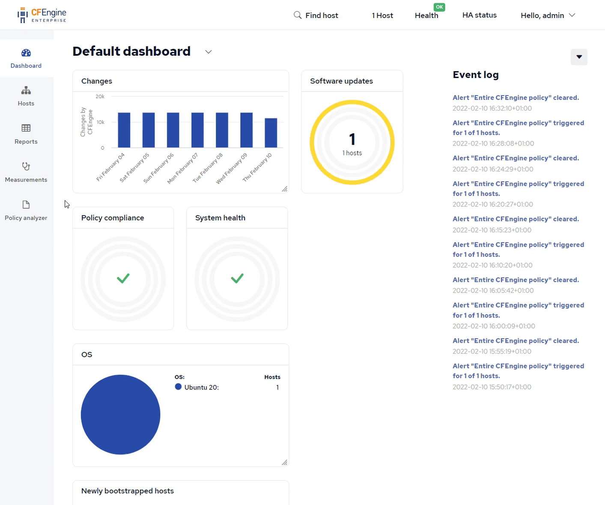
(It may take a few minutes before the report shows up).
What's next
Now that you've successfully added modules and seen the results in Mission Portal, you're ready to look for more modules, or explore Mission Portal further. Here are some examples of modules you might be interested in:
- Inventory (reporting) data of who can use sudo on each host
- Scan and report on potentially vulnerable log4j installations
- Upgrade all packages with the system's package manager (apt, yum, etc.)
To add more modules, just repeat the commands from steps 1-3.
For example, add the inventory-sudoers module to your project:
cfbs add inventory-sudoers
Then, as usual, build and deploy:
cfbs build && cf-remote deploy
In the next tutorial we will look more at the reporting and Web UI, called Mission Portal:
Reporting and web UI
After setting up your CFEngine Hub, adding modules and deployed your first policy set, it's appropriate to get familiar with the CFEngine Web UI, Mission Portal, and some of it's useful features. This is by no means an exhaustive list of everything Mission Portal offers, but a good introduction for new users. If you haven't already, open your web browser and put the IP address (or hostname) of your CFEngine Hub in the address bar. For example:
(Log in with the username and password for your hub, the default is admin as both and you will be prompted to change it on the first login).
Video
There is a video version of this tutorial available on YouTube:
The host info page
You can find individual hosts by using the search bar in the top right corner of Mission Portal, or by clicking Hosts in the left navigation bar and looking through the different categories in the tree. Both ways will lead you to an individual Host info page:
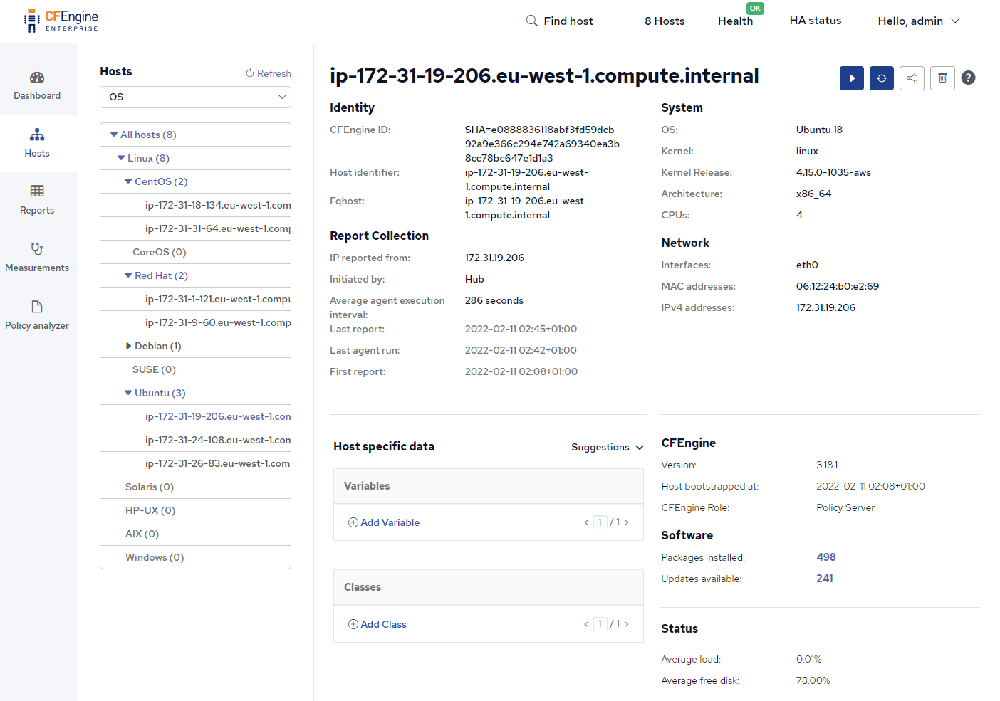
In this page you find a lot of useful functionality and information related to an individual host. There are a few action buttons in the top right corner:
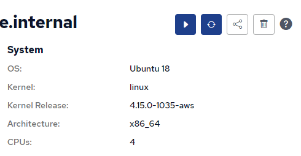
These allow you to trigger an agent run, report collection, get a sharable link, or delete the host from Mission Portal and the hub. Further down there is a section for Inventory (reporting data) which you can customize to show the pieces of information you care about:
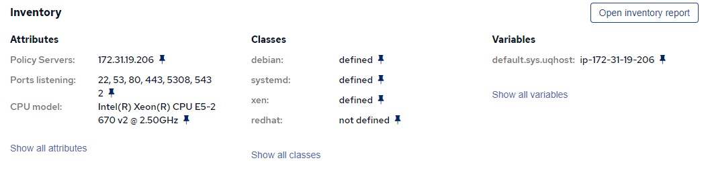
In the Host specific data section you can assign CFEngine variables and classes to that host, changing the behavior of the policy running there. If you haven't started writing any policy yet, the Suggestions menu can be used to make some changes to what the default policy is doing, such as making the agent run every minute instead of the 5-minute default:
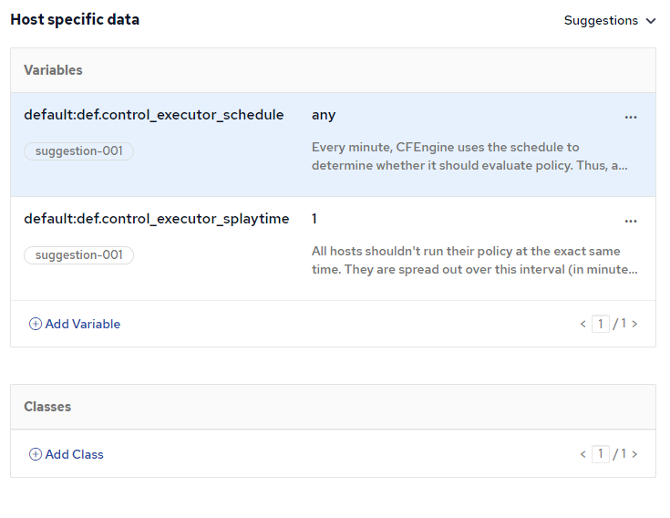
Tip: Host specific data can be used to make temporary or permanent changes to the data (configuration) of specific hosts.
Using the suggestion from the screenshot above has the same effect as the every-minute module we added earlier in the tutorial series.
The advantage of not using that module and instead using host specific data is that we can quickly enable and disable this functionality on a per-host basis, and without rebuilding and deploying a new policy set to all our hosts.
Inventory reports
Inventory reports allow you to easily get an overview of all your hosts, and what is on them. Each host in your infrastructure gets a row in the inventory report. The columns can be customized so the report shows the data you care about:

Use the Filter menu if you want to only show some of your hosts in the report.
Compliance reports
Compliance reports allow you to specify your requirements for your infrastructure as checks, and easily see which hosts are compliant and which ones are not. The checks are grouped into categories and you can specify that some checks only apply to some hosts. In Mission Portal, there is already an example compliance report which gives you a good idea of the things you can do with them:
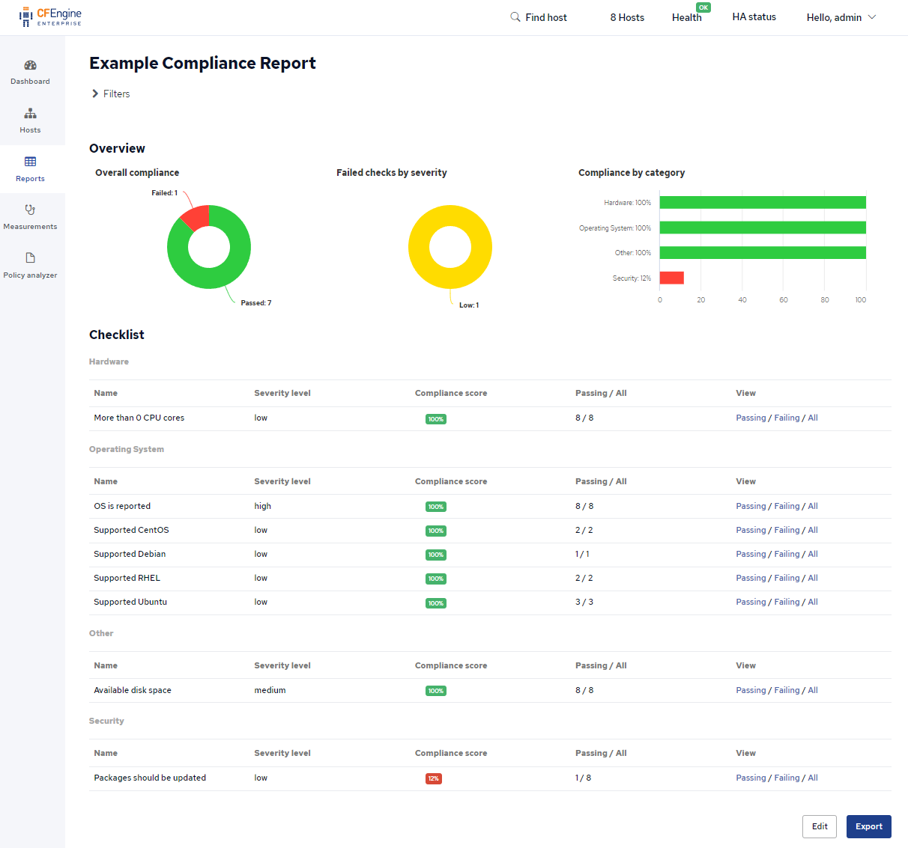
(To find this, click Reports in the left navigation bar, then Compliance).
Policy analyzer
As you start writing policy or using more modules, you might encounter situations where your deployed policy is not working and causes errors on some hosts. The best way to investigate these errors is to use the Policy Analyzer. In the left navigation bar, you can click Policy Analyzer, and then the blue button to Enable policy analyzer. Once enabled (refresh or wait a bit) the policy analyzer gives you a way to browse through your policy set:
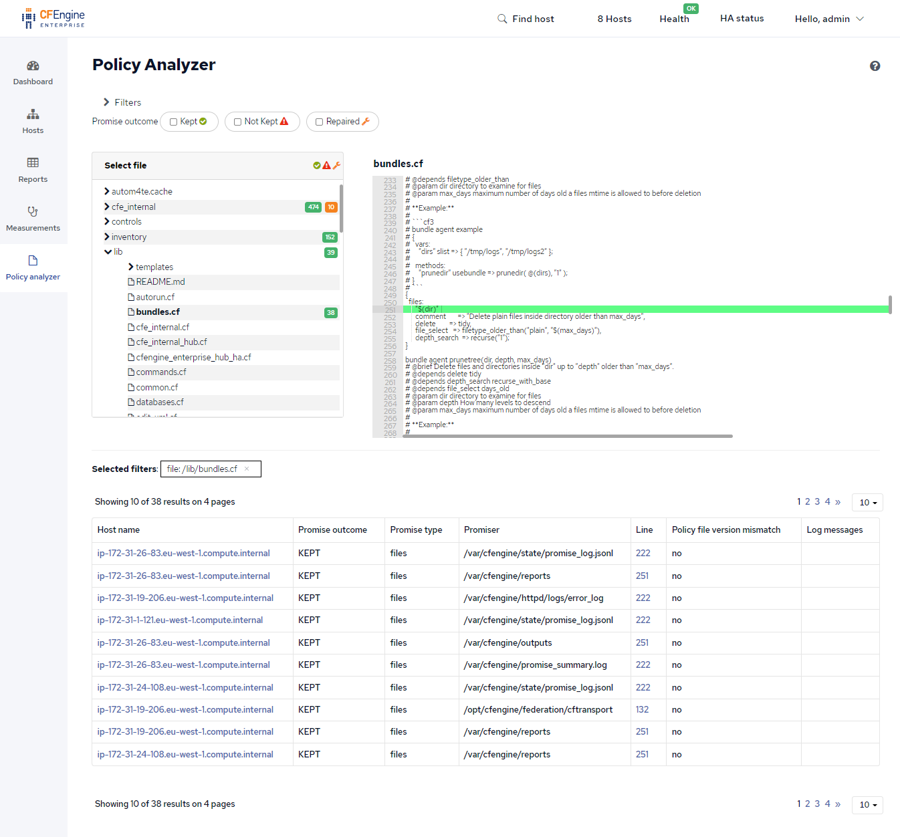
The Policy Analyzer tab will have a red counter if there are errors happening in your policy. In CFEngine, we call these Promises not kept, meaning the policy failed to do what it was supposed to, it failed to reach the desired state.
You can change the filters to see the outcomes of everything your policy does. Drill down to individual policy files and lines of policy and see which hosts it's failing on and what the relevant log messages are.
Next steps
At this point you have a good overview of what CFEngine does, and you can choose to look around in Mission Portal, create your first Compliance Report, or find more modules on CFEngine Build. Once you feel comfortable with the CFEngine Hub, modules, and reports, you are ready to move on, and learn CFEngine's expressive policy language and powerful module system. You're not limited by what modules others have made, you can write the code you need to get things done:
Writing policy
Now that we are familiar with how CFEngine works, and how you can use modules and the web UI, let's take a look at policy. CFEngine policy language is a flexible, declarative language for describing the desired state of your infrastructure (or individual host).
To start, create a new file and open it, or the folder, in your editor:
cd ~/cfengine_project && touch my_policy.cf
Open the project folder (or just the policy file) in your editor:
code .
(Here we are using code - VS Code, but you can use whatever editor you want).
Hello, world
Let's take a look at the traditional "Hello, world!" example:
bundle agent hello_world
{
files:
"/tmp/hello"
content => "Hello, world!";
}
The policy above will create and write Hello, world! to the /tmp/hello file, if necessary.
If that file already exists, with the correct content, nothing is done.
In CFEngine, a bundle is a collection of promises, things you want to be true, your desired state.
agent signifies that this bundle is for the cf-agent binary, which makes changes to the system (as opposed to the file server or other parts of CFEngine).
hello_world is the name of the bundle.
If you want to use this bundle from somewhere else in the policy, you need to refer to it by its name.
Bundle names should be descriptive and unique within your policy set, or at least within each namespace, if you are using multiple namespaces.
The promise type, files in this case, is the type of resource we want to manage.
With files promises you can manipulate file permissions, edit lines, render templates to files, copy files around, etc.
Put the code snippet above in a file called my_policy.cf, and add it to the project:
cfbs add ./my_policy.cf
cfbs will ask you whether you want any of the bundles in this file to be run (added to bundle sequence).
The default is the first bundle, hello_world, which is what we want.
Now, build and deploy again:
cfbs build && cf-remote deploy
The policy has been deployed and that /tmp/hello file should be ready.
You can log in with SSH to check this, or use cf-remote:
cf-remote sudo -H hub "cat /tmp/hello"
The output should look like this:
root@192.168.56.2: 'cat /tmp/hello' -> 'Hello, world!'
Running the agent
In CFEngine, the program which runs all your policy / modules and makes changes to the system is called cf-agent, or the agent.
Just like above, we can use cf-remote sudo to run the agent on the hub:
cf-remote sudo -H hub "cf-agent --no-lock --info"
When experimenting with modules, policy, and making changes, knowing how to perform an agent run to speed things up or get feedback from what your policy is doing can be useful.
This is similar to triggering an agent run with the buttons in Mission Portal, or logging in with ssh and running cf-agent --no-lock --info from the command prompt.
Tip: cf-agent --no-lock --info can also be written using short options; cf-agent -KI.
To test that our policy works, let's delete the /tmp/hello file and watch CFEngine create it:
cf-remote sudo -H hub "rm /tmp/hello && cf-agent -KI"
Git promises
Earlier in this tutorial series, we added the promise-type-git module to our project.
This means that we can just start using the new promise type in policy:
bundle agent hello_world
{
git:
"/tmp/hugo"
repository => "https://github.com/gohugoio/hugo.git",
version => "master";
}
This policy uses the git promise type to clone the Hugo project's source code from GitHub.
Again, put the code snippet above in the my_policy.cf file, build, and deploy:
cfbs build && cf-remote deploy
From now on, feel free to put each example in the my_policy.cf, and run the command to build and deploy it.
Since it's the same every time, we won't mention it again and again.
Variables
The promise type vars is used for storing data in a variable internally.
This has several benefits:
- The data, such as a string, gets a short and descriptive name
- It can be defined in one place, and edited there without having to update multiple places
- Gives you more flexibiltiy for manipulating the data, with functions and intermediate variables
Here is a simple example:
bundle agent hello_world
{
vars:
"github_path"
string => "/tmp/github.com";
files:
"$(github_path)/." # /. means a folder
create => "true";
git:
"$(github_path)/hugo"
repository => "https://github.com/gohugoio/hugo.git",
version => "master";
}
In the above example, both git and files promises use the github_path variable.
The files promise is responsible for creating the parent directory, the git promise for cloning inside of it.
Tags, functions, and reporting
We might want to have some version information on which hugo we are using.
Since we clone and track the master branch, there isn't necessarily a version number available, but there is always a commit SHA, so let's look for that.
From the command line, you could find this by:
git log -1 --format="%H"
We want to put this in a variable and include it in our reports we can see in Mission Portal.
To take the output of a command and put it in a variable, we will use the execresult() function:
bundle agent hello_world
{
vars:
"github_path"
string => "/tmp/github.com";
"hugo_path"
string => "$(github_path)/hugo";
"hugo_commit"
string => execresult('cd "$(hugo_path)" && git log -1 --format="%H"', "useshell"),
meta => { "inventory", "attribute_name=Hugo commit" },
if => fileexists("$(hugo_path)/.git");
files:
"$(github_path)/." # /. means a folder
create => "true";
git:
"$(hugo_path)"
repository => "https://github.com/gohugoio/hugo.git",
version => "master",
if => fileexists("$(github_path)");
}
if => fileexists() was added to ensure the order of things; we want git clone to happen when the parent directory exists, and we want git log to happen after git clone, so when the .git folder is there.
Generally speaking, CFEngine does not evaluate the policy from top to bottom, so if you want some things to happen after other things, you should ensure this, for example with an if.
By adding meta => { "inventory", "attribute_name=Hugo commit" }, to the variable, we are saying that we want this as an inventory attribute, a part of the reporting data, and we want the attribute name, shown in the Web UI and reports, to be Hugo commit.
And indeed, after deploying this policy, we can see it show up in Inventory reports:
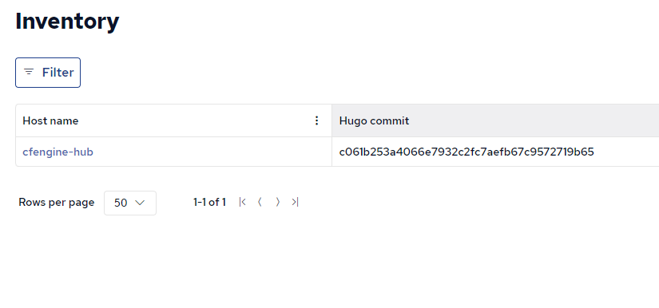
Tip: CFEngine's reporting happens on a schedule, so it might take some minutes for this new inventory attribute to appear for the first time. To speed it up, you can click the hostname to go to the host info page, and the Play button in the top right corner to trigger an extra agent run and report collection.
Next steps
This is by no means a complete guide to policy writing, but should give you an idea of how to use modules, and get started building and experimenting. Next, we will look at implementing modules, such as the git promise type we used here:
If you would like to learn more about policy writing, these are some good resources to look at:
Developing modules
Modules, such as the one we've used for git promises, are easy to write. In this tutorial, we will focus on implementing a new promise type in Python, with the provided CFEngine library, since this is the easiest and recommended way. If you are interested in how modules are implemented, or how you could do it in another programming language, see the complete documentation.
In short, you need to implement 2 functions: validate_promise() and evaluate_promise().
Validation should check that the correct attributes are used, and any other constraints you may want to enforce, to determine whether a promise is valid or invalid.
Evaluation happens after successful Validation, and actually performs actions / makes changes to the system.
When implementing a promise type for CFEngine, there are 3 outcomes you need to understand:
Result.KEPT- The module detected that no changes are necessary, the actual state of the system is already consistent with the desired stateResult.REPAIRED- The module detected that changes have to be made, and successfully completed all of themResult.NOT_KEPT- The module failed to make the necessary changes
The template
To get started, let's take a look at this template repository:
https://github.com/cfengine/promise-type-template
We can add it to our project with the full URL:
cfbs add https://github.com/cfengine/promise-type-template
From that repo, we have now added a new promise type, it is called git_example to avoid confusion with the "real" git promise type used earlier in the tutorial.
Then, we should edit our policy example, my_policy.cf to use this module:
bundle agent hello_world
{
meta:
"tags"
slist => { "autorun" };
git_example:
"/tmp/hugo"
repository => "https://github.com/gohugoio/hugo.git";
}
That's it, you can now build and deploy:
cfbs build && cf-remote deploy
And to test it, we can delete the folder and run the agent again:
cf-remote sudo -H hub "rm -rf /tmp/hugo && cf-agent -KI | grep hugo"
The output printed from that remote machine shows that cf-agent cloned the repository again, after we deleted it:
root@192.168.56.2: 'rm -rf /tmp/hugo && cf-agent -KI | grep hugo' -> ' info: Cloning 'https://github.com/gohugoio/hugo.git' -> '/tmp/hugo'...'
root@192.168.56.2: ' info: Successfully cloned 'https://github.com/gohugoio/hugo.git' -> '/tmp/hugo''
Creating your own repository
To start working on your own module, you can click Use this template in GitHub, to create your own copy (fork):
https://github.com/cfengine/promise-type-template
Take a look at these important files:
git_example.py- The module code itself. This is where you will work the most, changing what the promise type does, implementing functionality, fixing bugs, etc.cfbs.json- Metadata about the module(s). Most importantly, theprovideskey has the information needed forcfbs add, and subsequentlycfbs buildto work.enable.cf- The snippet of policy that needs to be included to enable your promise type.
Start by editing cfbs.json, at least changing the repo and by URLs.
Tip: Remember to update cfbs.json and enable.cf if you change the filename of the python file, or the name of the promise type.
To test your changes, make sure they are pushed to GitHub, and re-add your module, for example:
cfbs remove promise-type-git-example && cfbs add https://github.com/cfengine/promise-type-template
Tip: Replace the URL with your own repository URL when you've create one using the template.
If you are working on a branch of a repo you can add the commit at the end of the URL with @<commit>.
Remember to update the commit in cfbs.json when you push changes to your branch.
Then, build and deploy the project again:
cfbs build && cf-remote deploy
And just like before, you can run manual agent runs to test:
cf-remote sudo -H hub "rm -rf /tmp/hugo && cf-agent -KI"
Changing / updating the python file
As you've changed the high level things, like file name, promise type name, URLs, etc. and deployed that, the only thing you need to edit is the contents of the python file. So, to test your changes to the python file, a full build is not really necessary, you can just copy over that one file:
cf-remote scp -H hub git_example.py && cf-remote run -H hub "mv git_example.py /var/cfengine/masterfiles/modules/promises/git_example.py"
(Assuming you have the git_example.py file in the current directory).
And then you can test it:
cf-remote sudo -H hub "cf-agent -KIf update.cf && cf-agent -KI"
Note: Every 5 minutes (by default) CFEngine will copy files from /var/cfengine/masterfiles (on the hub) to other locations, such as /var/cfengine/inputs and /var/cfengine/modules.
This is the responsibility of the update policy, update.cf.
By editing the file inside /var/cfengine/masterfiles, and then running cf-agent -KIf update.cf we can be sure that our modules and policy files are correct and in sync, our changes will not be reverted the next time CFEngine runs in the background.
Submitting your module to CFEngine Build
Once you have your module working and would like to share it with others, take a look at our contribution guide:
https://github.com/cfengine/build-index/blob/master/CONTRIBUTING.md
Additional resources
There are several places to look for more information or inspiration when writing modules:
- The real git promise type code
- HTTP promise type module
- CFEngine custom promise type specification
- Blog post: How to implement CFEngine Custom Promise types in Python
- Blog post: How to implement CFEngine Custom Promise types in Bash